主题：Introduction to MPI（分布式内存并行编程入门）
Lecture 7 的 slide 1–7 是行政内容（课程公告、HW 时间线、上一讲回顾等），这里跳过。技术内容从 slide 8 开始。
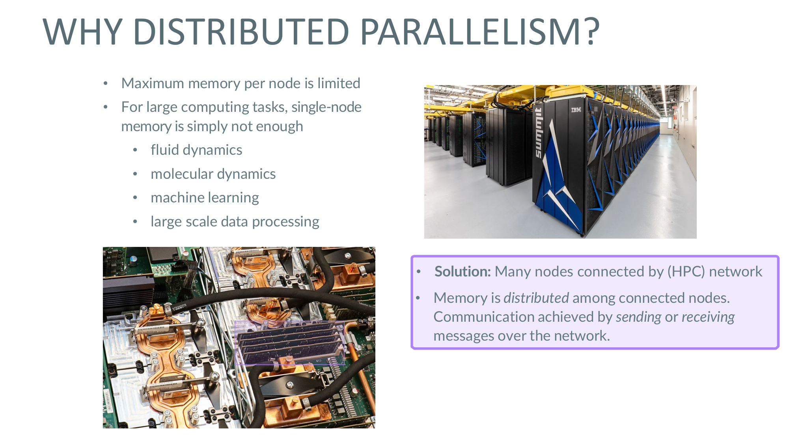
这一页是 Lecture 7 的开场，承接上一讲的 OpenMP（共享内存）抛出新问题：为什么仅靠一台机器的多线程还不够？答案是单机的内存与算力都有物理上限，而很多真实问题已经超过了这个上限，必须把计算分散到多台机器上。
"node"（节点）在 HPC 语境里就是"一台物理服务器"。再高端的服务器内存也只有 1–2 TB 量级，CPU 核心数也就几十到上百个。这个上限是硬件物理限制，不是可以靠"加钱"无限突破的 —— 主板插槽数、内存控制器带宽、单 CPU 的封装尺寸都卡死了天花板。
slide 列了四类典型的"装不下"工作负载，都是 HPC 经典应用：
右下角紫色框是 slide 给出的解决方案：把多台节点用专用高速网络连起来组成一个集群（cluster / supercomputer）。这就是右上角图片那种数据中心的样子 —— 一排排机柜，每个机柜里几十台服务器。
关键的两点设计选择：
MPI_Send / MPI_Recv。这里的"(HPC) network"不是普通的以太网/Wi-Fi，而是专为低延迟设计的互联网络，常见的有 InfiniBand、Omni-Path、NVLink（GPU 之间）。普通以太网延迟可能在毫秒量级，HPC 网络延迟在微秒级，带宽也高一两个数量级 —— 因为分布式并行的性能瓶颈往往不是计算而是通信，网络慢一点整个程序就拖死了。
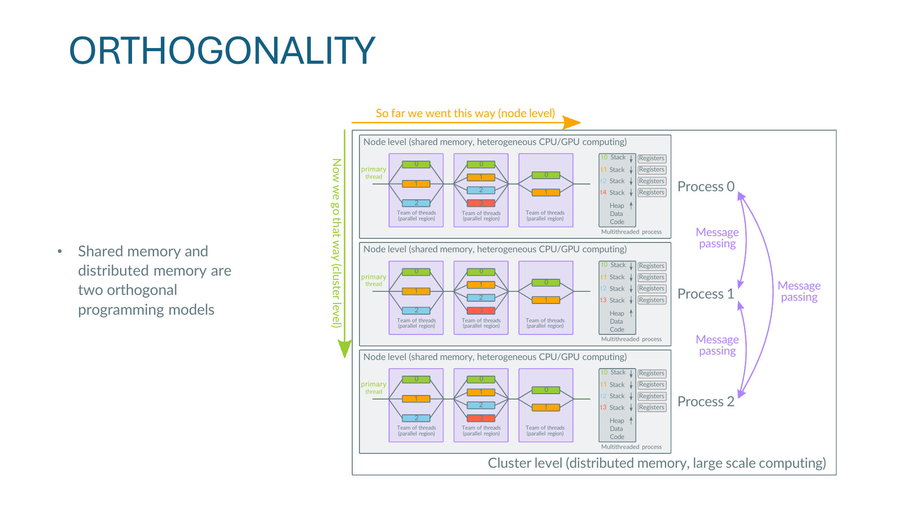
这一页只讲一句话："Shared memory and distributed memory are two orthogonal programming models"—— 共享内存模型和分布式内存模型是正交的，不是互斥的。"正交"在工程语境里就是"两个独立维度，可以叠加使用"。
右边的图把一个超算系统拆成两个层级看：
真实 HPC 程序几乎都是两层都用：节点之间用 MPI 发消息，节点内部再用 OpenMP 多线程把单节点的核心榨干。这种叫 hybrid MPI+OpenMP，是上一讲那张性能曲线里上限最高的蓝线。
所以"正交"的含义是：你不需要二选一。MPI 不替代 OpenMP，它解决的是 OpenMP 解决不了的问题（跨节点）；OpenMP 也不替代 MPI，它专攻 MPI 不擅长的事（节点内细粒度多线程）。
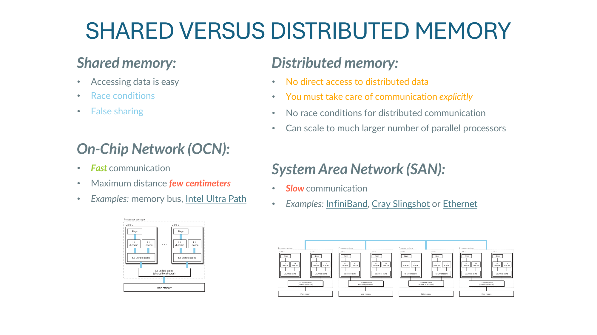
这一页是把 Slide 9 的"两种模型"展开来，对照写出各自的优缺点和承载它们的网络。slide 用左右两栏分别讲 shared 和 distributed，每栏上半是"编程层面的优缺点"，下半是"硬件层面的网络"。
下半 On-Chip Network (OCN)：
MPI_Send/MPI_Recv。代码量和复杂度比 OpenMP 高一个数量级。下半 System Area Network (SAN)：
根因：CPU 按 cache line 读写，不按变量。你写 x = 5，硬件实际把包含 x 的整条 64 字节 cache line拉进自己核心的 L1。粒度比变量大得多 —— 哪怕只想改 4 字节，硬件也搬 64 字节。
缓存一致性的硬规则：多核场景下，任意时刻一条 cache line 最多只能由一个核心持有"修改"权（MESI 协议的 M 状态），其他核心的副本必须先作废。
伪共享在代码里长这样：
int counter[2]; // 2 个 int = 8 字节，几乎一定落在同一 cache line
#pragma omp parallel num_threads(2)
{
int tid = omp_get_thread_num();
for (int i = 0; i < 100000000; i++)
counter[tid]++; // 看上去：线程独立写各自的变量
}逻辑上零冲突。物理上发生的事：
Core 0 写 counter[0] → 抢到 cache line 的修改权 Core 1 想写 counter[1] → Core 0 必须先写回，Core 1 重新拉入并抢权 Core 0 又写 → 反过来再抢一遍 ... cache line 在两核之间无限 ping-pong
每次"抢"都要走核间总线，跨 socket 时甚至要走 UPI。延迟从 1 cycle 涨到几十纳秒。一个看起来完美并行的循环，可能比单线程还慢。
修复：让每个线程要写的变量独占一条 cache line。
struct alignas(64) Slot { int value; }; // C++17
Slot counter[2]; // counter[0] 和 counter[1] 各占一条 line
// 或手动 padding：
struct { int value; char pad[60]; } counter[2];"伪"在哪里：从代码看两个线程没共享任何变量，从硬件看它们共享了同一条 cache line。这种"程序员看不见但硬件强制存在"的共享，肉眼无法定位，必须靠 perf / VTune 这类 profiler 才能发现。
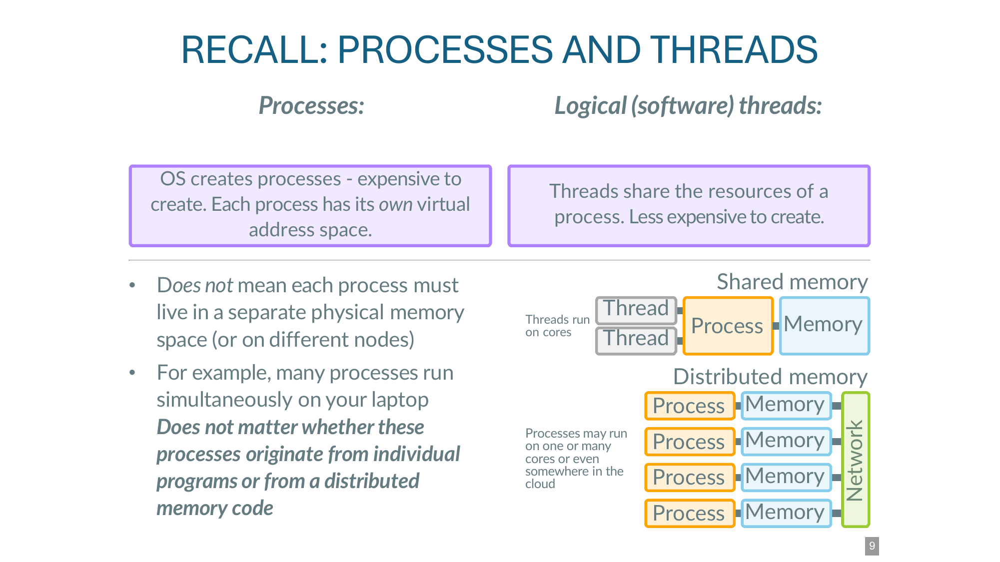
这一页是为后面的 MPI 做铺垫 —— MPI 的并行单位是进程（process），不是线程。所以先把进程和线程的区别再过一遍，并强调一个容易误解的点。
Processes：OS 创建，expensive to create。每个进程都有自己独立的虚拟地址空间（own virtual address space） —— 它看到的指针 0x7fff1234 和别的进程看到的同一个数值指向完全不同的物理内存。这就是为什么进程之间默认不能直接读写对方的内存。
Threads：共享所属进程的资源（地址空间、文件描述符等），less expensive to create。OpenMP 用的就是线程。
这是这一页真正想纠正的误区："独立虚拟地址空间"≠"独立物理机器"。
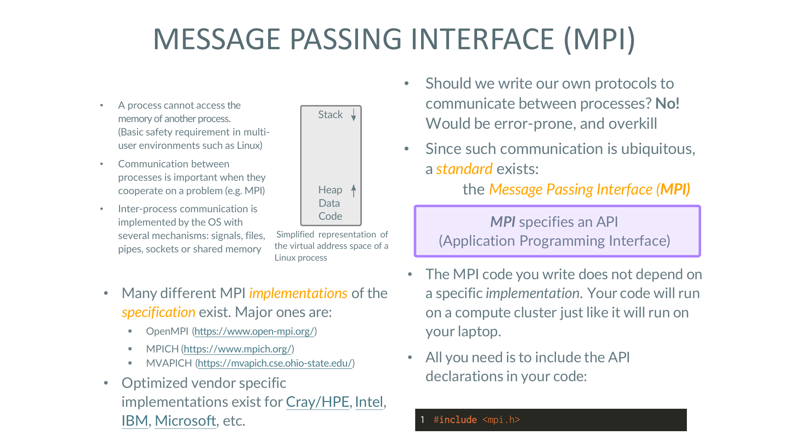
这一页正式给出 MPI 的定义，并解释"为什么需要它"以及"它在系统栈里处于哪一层"。
Inter-process communication is implemented by the OS with several mechanisms: signals, files, pipes, sockets, or shared memory —— OS 已经提供了一堆 IPC 原语：信号、文件、管道、socket、共享内存段。每个都能跨进程传数据，但是用法各异、跨平台不一致。
Should we write our own protocols to communicate between processes? No! Would be error-prone, and overkill —— slide 直接给出反问加回答：每写一个并行程序就重新设计通信协议（怎么编码消息、怎么处理乱序、怎么处理失败），既容易出 bug 又是重复造轮子。
#include <mpi.h> —— 用法和普通 C 库一样，#include 头文件，链接 MPI 库就行。Many different MPI implementations of the specification exist。最常见的几个开源实现（写代码时通常装其中之一就够了）：
另外还有 vendor-specific 优化版本：Cray/HPE、Intel、IBM、Microsoft 等大厂会基于自家硬件做定制 MPI（性能比开源版本更好，但只在自家平台上跑）。
三层不同抽象，分开看就清楚了：
Specification（规范）= 一份纸面文档。规定"应该有哪些函数、参数是什么、做什么事、出错时怎样"。本身不能运行。MPI 的规范是 ~1100 页 PDF，由 MPI Forum 维护。
API= 规范暴露给程序员的函数签名集合，存在于头文件里。你 #include <mpi.h> 之后看到的就是 API：
int MPI_Send(const void *buf, int count, MPI_Datatype datatype,
int dest, int tag, MPI_Comm comm);Implementation= 真正写出 MPI_Send 函数体的代码 + 编译出的 libmpi.so。它要决定"消息怎么过网络"（TCP？InfiniBand？同机器走共享内存？）。OpenMPI、MPICH、Intel MPI 各是一个独立项目，几十万行代码，但都满足同一份 spec。
关系：spec ⊃ API。API 是 spec 中给程序员看的部分；spec 还规定了语义、错误行为、进度保证等 API 签名之外的东西。日常说话经常把"MPI API"和"MPI spec"混用。
| 层级 | USB 世界 | MPI 世界 |
|---|---|---|
| Specification | USB 协议文档（形状/电压/字节序） | MPI 标准 PDF |
| API | USB-A 插口形状（你能怎么插） | MPI_Send(...) 函数签名 |
| Implementation | Anker / Belkin 各自做的数据线 | OpenMPI / MPICH / Intel MPI |
手机不在乎你用 Anker 还是 Belkin —— 都是 USB。MPI 程序也不在乎底层链接的是哪家实现 —— 都满足同一份 spec。
// hello.c —— 一字不改
#include <mpi.h>
int main(int argc, char **argv) {
MPI_Init(&argc, &argv);
int rank;
MPI_Comm_rank(MPI_COMM_WORLD, &rank);
printf("Hello from rank %d\n", rank);
MPI_Finalize();
}笔记本上装 OpenMPI：
mpicc hello.c -o hello # mpicc 是 OpenMPI 提供的包装器
mpirun -n 4 ./hello # 链接 OpenMPI 的 libmpi.so把一字未改的 hello.c 拷到装 Intel MPI 的集群：
mpicc hello.c -o hello # mpicc 现在是 Intel MPI 提供的
mpirun -n 64 ./hello # 链接 Intel MPI 的 libmpi.so编译器是不同公司的工具、链接进去的 libmpi.so 是完全不同的二进制、底层网络从 shared memory 变成 InfiniBand —— 但观察到的行为完全一致。这就是"Your code will run on a compute cluster just like it will run on your laptop"的实际含义。
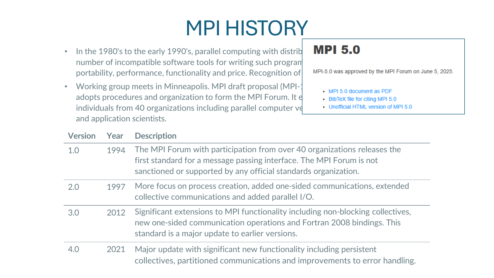
这一页是 MPI 的版本时间线。slide 一笔带过历史，重点是知道存在哪几个主版本以及它们各自加了什么。
1980 年代到 90 年代初，做分布式并行只能用各家不兼容的私有库，移植性、性能、功能、价格各方面都很糟。一个工作组在 Minneapolis 开会起草 MPI 草案（MPI-1），由 MPI Forum 推动 —— 40 多个组织参与，有并行计算机厂商、应用科学家。
| 版本 | 年份 | 主要变化 |
|---|---|---|
| 1.0 | 1994 | 第一个标准，奠定消息传递接口的基础。注意：MPI Forum 不是任何官方标准化组织背书的，是社区自治的。 |
| 2.0 | 1997 | 加入动态进程创建、单边通信（one-sided communication）、扩展的集合通信、并行 I/O。 |
| 3.0 | 2012 | 大版本：非阻塞集合通信（non-blocking collectives）、新的单边操作、Fortran 2008 绑定。是相对早期版本的重大扩展。 |
| 4.0 | 2021 | 新增持久化集合通信、分区通信（partitioned communications）、错误处理改进。 |
slide 右上角紫色框还提到 MPI 5.0 已于 2025-06-05 由 MPI Forum 批准发布（最新版）。
大多数教程和课程代码都基于 MPI-3.x 写的，因为 3.0 是真正成熟、广泛部署的版本。MPI-1 的核心 API（MPI_Init、MPI_Send、MPI_Recv、MPI_Finalize）30 年来基本没变，所以学最老的 API 也能跑在最新的实现上。
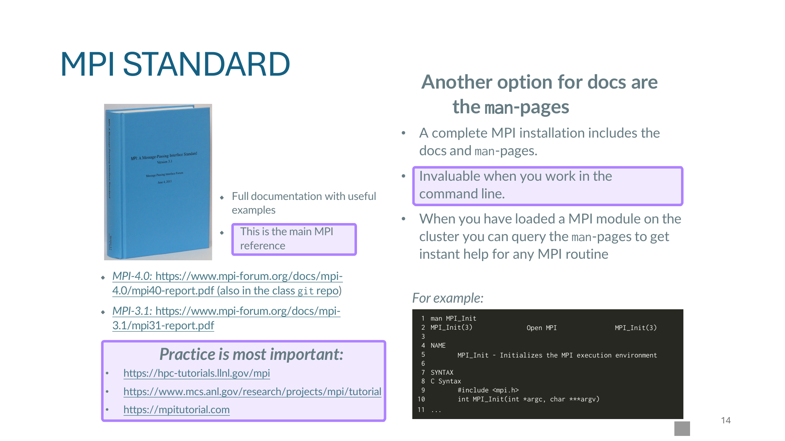
这一页讲遇到不懂的 MPI 函数去哪里查。是工具页，不是知识页，所以扫一下就行。
mpi-forum.org/docs 上能下到完整 PDF。课程仓库里给了 MPI-4.0 和 MPI-3.1 两个版本的报告。这是终极参考，但量大，适合查不适合读。man MPI_Init 直接查某个函数的签名和行为。slide 右下方那个黑框就是 man MPI_Init 的输出示例。在 SSH 进集群、没有浏览器的场景下最方便。"Practice is most important" —— 看再多文档不如自己写一遍。后面 Lecture 会有 hands-on 例子。
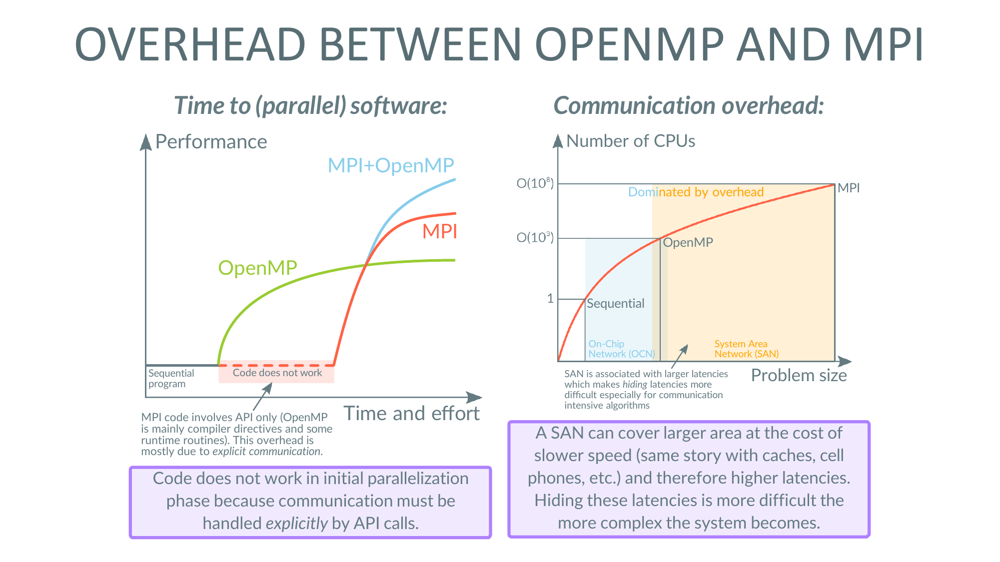
这一页用两张图同时讲 开发开销 和 运行开销，比较 OpenMP 和 MPI 在这两个维度上的不同表现。
横轴是投入的时间和精力，纵轴是程序性能。三条曲线：
#pragma omp 就有加速。但很快趋于平缓，因为它的天花板就是单节点的核心数。优势是"投入小见效快"。横轴是问题规模（problem size），纵轴是需要的 CPU 数（number of CPUs）。
slide 紫色框点出关键：SAN can cover larger area at the cost of slower speed (same story with caches, cell phones, etc.) and therefore higher latencies. Hiding these latencies is more difficult the more complex the system becomes. —— 大规模和低延迟是相互拉扯的两个目标，越大的系统越难掩盖延迟。
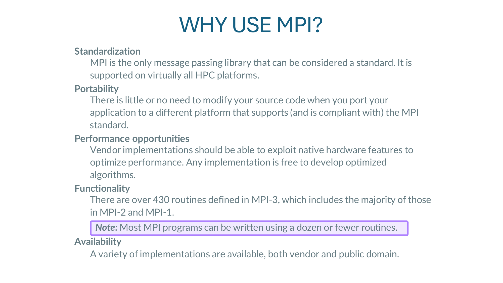
这一页是给 MPI 做"销售"，列了五个采用它的理由。每条都很简短，对应理解一遍即可。
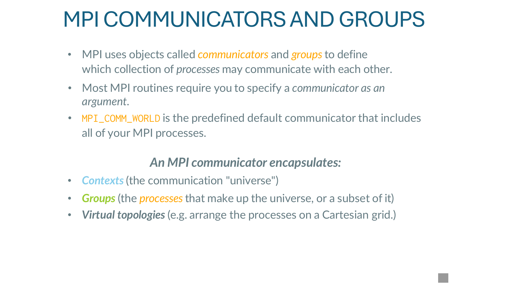
这一页引入两个 MPI 的核心抽象：communicator（通信器） 和 group（组）。它们是"哪些进程之间可以通信"的元数据。
MPI_Send、MPI_Bcast 等）都要传一个 communicator 参数告诉它"这次通信发生在哪个范围内"。这是 MPI API 的一个普遍约定。MPI_COMM_WORLD is the predefined default communicator that includes all of your MPI processes —— 程序启动时 MPI 自动建好一个叫 MPI_COMM_WORLD 的全局 communicator，包含所有进程。最简单的程序只用这一个就够。MPI_COMM_WORLD 就是默认的"全员群"。
看一下 MPI_Send 的签名：
int MPI_Send(const void *buf, int count, MPI_Datatype dtype,
int dest, int tag, MPI_Comm comm); // 收 MPI_Comm，不是 MPI_GroupAPI 直接拒绝你拿 group 发消息 —— 没有 MPI_Send_with_group(...) 这种函数。Group 只能用来做本地集合运算（incl / excl / union / intersection / difference），这些操作不走网络、几乎零成本。
| 维度 | Group | Communicator |
|---|---|---|
| 本质 | 一份进程名单 | 名单 + context_id + topology |
| 能发消息吗 | ❌ | ✅ |
| 能做集合运算吗 | ✅（本地、便宜） | ❌（要先抽成 group） |
| 创建成本 | 几乎零 | collective 通信，贵 |
设计上的取舍：先用便宜的 group 自由地做集合运算，等真要通信了再花一次"升级费"做成 communicator。
MPI_Comm 在代码里长什么样它是个 opaque handle（不透明句柄）—— MPICH 里就是个 int（句柄表索引），OpenMPI 里是个指向内部 struct 的指针。你不能也不应该直接访问内部字段，只能通过 MPI_Comm_size() / MPI_Comm_rank() 这类 API 去问它。
如果能"撬开"它（伪代码，非真实 API）：
struct {
int context_id; // 例：0x47 —— 这个 communicator 独有的整数
MPI_Group group; // 名单：[rank0, rank1, ...]
Topology topology; // 可选：例如 4×4 网格 / 环 / 树
// ... 内部簿记
}由 MPI 库在创建 communicator 时自动分配，全局唯一，你看不到也不需要看到。它的作用：塞进每条消息的 envelope（信封），让接收方能匹配"这条消息属于哪条频道"。
回忆 message envelope 字段：[source | dest | communicator | tag | dtype | count] —— 实际放进信封的是 communicator 的 context_id 这个整数。接收方匹配时：
进来消息.context_id == 我 Recv 时传入的 comm.context_id ? 不等 → 忽略 相等 → 才看 source / tag
两个不同的 communicator = 两个不同的 context_id = 两条互相隔离的频道。哪怕它们包同一组进程、用同一个 tag，消息也不会串。
没有 context 会怎样：
// 主程序同时用两个第三方库
LibA_compute(MPI_COMM_WORLD, ...); // 库 A 内部用 tag=5
LibB_compute(MPI_COMM_WORLD, ...); // 库 B 内部也用 tag=5库 A 等自己的 tag=5 时，可能误吃掉库 B 的 tag=5 消息。神秘 bug。
修复 —— 给每个库一个独立 communicator：
MPI_Comm comm_A, comm_B;
MPI_Comm_dup(MPI_COMM_WORLD, &comm_A); // 复制 group，但分新 context_id
MPI_Comm_dup(MPI_COMM_WORLD, &comm_B); // 再复制一份，又一个新 context_id
LibA_compute(comm_A, ...);
LibB_compute(comm_B, ...);comm_A 和 comm_B 的 group 一模一样（都是 WORLD 全部进程），但 context_id 不同。MPI 匹配时先看 context_id，库 A 的消息根本进不了库 B 的 Recv 队列。bug 消失。这就是 group 给不了的隔离能力。
MPI_Comm_split 创建子 communicator#include <mpi.h>
int main(int argc, char **argv) {
MPI_Init(&argc, &argv);
int world_rank;
MPI_Comm_rank(MPI_COMM_WORLD, &world_rank);
// 把进程切成两组：偶数 rank 一组，奇数 rank 一组
int color = world_rank % 2; // 0 或 1，同 color 进同一新 comm
int key = world_rank; // 决定新 comm 里的 rank 顺序
MPI_Comm sub_comm;
MPI_Comm_split(MPI_COMM_WORLD, color, key, &sub_comm);
// ↑ collective —— 所有 WORLD 进程都要调用
int sub_rank;
MPI_Comm_rank(sub_comm, &sub_rank);
printf("world %d → sub %d (color=%d)\n", world_rank, sub_rank, color);
MPI_Comm_free(&sub_comm);
MPI_Finalize();
}用 mpirun -n 8 启动后，world_rank=2 在新 communicator 里 rank 变成 1。rank 永远是相对于具体 communicator 的，没有"全局 rank"这种东西。MPI 在内部给 sub_comm 分了一个新的 context_id，保证它和 MPI_COMM_WORLD 的消息互不干扰。
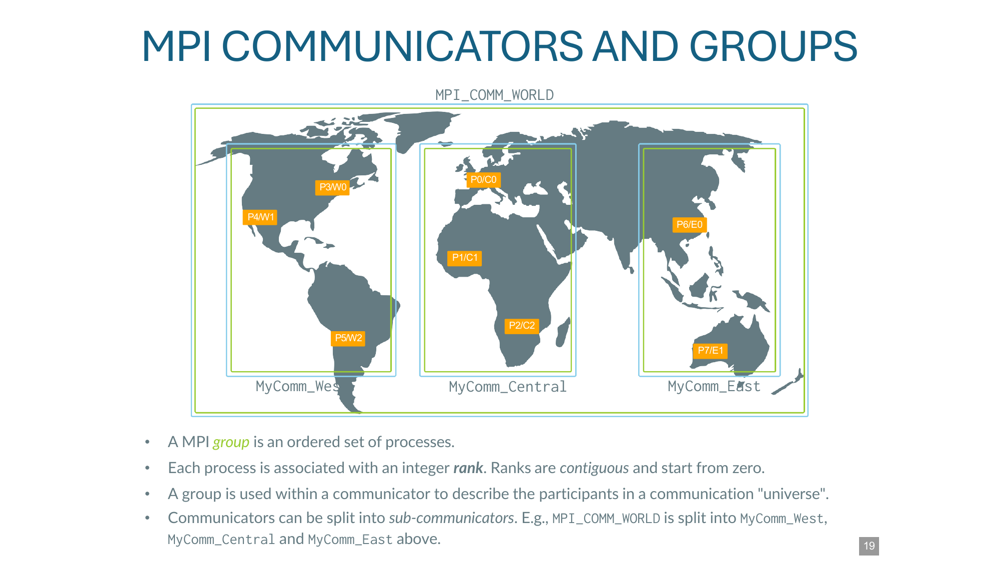
这一页用世界地图做例子把上一页的概念落地。MPI_COMM_WORLD 包了全球的进程（P0–P11 散布在地图上），然后又被切成三个子 communicator：MyComm_West、MyComm_Central、MyComm_East，对应美洲 / 非洲 / 亚太。
0, 1, 2, ..., N-1。从 0 开始、连续、整数这三条要记住，后面所有 MPI 程序的第一行几乎都是 MPI_Comm_rank(MPI_COMM_WORLD, &rank) 来取自己的 rank。MPI_COMM_WORLD 切成三个子 communicator。MPI 提供 MPI_Comm_split 函数实现这种切分。常用于"按区域 / 按角色"分组通信，避免无关进程互相打扰。MPI_COMM_WORLD 和 MyComm_East 里的 rank 通常不同。写代码时要明确"我在哪个 communicator 里说自己是 rank N"。
不是同一个东西。Process 是 OS 层面的运行实体（"东西本身"）；rank 是这个进程在某个 communicator 里被分配的整数 ID（"编号"）。类比"学生 ↔ 学号"。同一个进程在 WORLD 里 rank=5，在子 communicator 里 rank 可能是 1。所以代码里 MPI_Send 的 dest 写整数，但语义是"在指定 communicator 里编号为 N 的那个进程"。
每个 communicator 都是独立对象，内部就是一组进程。"sub-communicator"只是俗称（"我从 WORLD 切出来的"），它和 WORLD 在 MPI 里地位平等。不同 communicator 的成员集合可以重叠 —— 同一个进程同时属于多个 communicator 是常态。
8 进程例子：
启动后:
MPI_COMM_WORLD = {P0..P7}
执行 MPI_Comm_split(WORLD, color, key, &new) 后:
MPI_COMM_WORLD = {P0..P7} ← 没动
MyComm_East = {P0, P1, P2, P3} ← 新对象（color=0 那组）
MyComm_West = {P4, P5, P6, P7} ← 新对象（color=1 那组）P2 现在同时属于 WORLD 和 MyComm_East。两个 communicator 里 rank 通常不同，所以查 rank 必须明确传 communicator —— MPI_Comm_rank(WORLD, &rw) 和 MPI_Comm_rank(MyComm_East, &re) 返回值不一样。
Communicator 像"标签"，不像"容器"。一个进程可以贴多个标签。mpirun -n N 之后到 MPI_Finalize 之间，OS 里的进程数量始终是 N，所有 communicator 操作只维护成员关系表，不创建也不销毁进程。
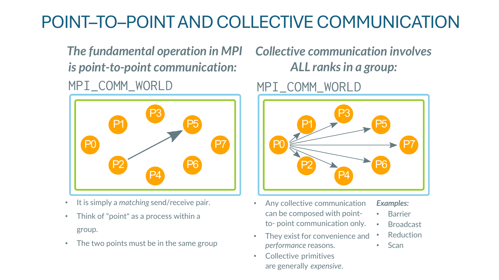
MPI 的通信操作分两大类：point-to-point（点对点）和 collective（集合）。这一页对比它们。
The fundamental operation in MPI is point-to-point communication —— 这是 MPI 的"原子操作"。图里 P2 → P5、P3 → P6 各自是一对箭头，代表两次独立的点对点通信。
MPI_Send(...,dest=5,...)，接收方调 MPI_Recv(...,source=2,...)，两边匹配成功消息才传过去。Collective communication involves ALL ranks in a group —— 集合通信的特点是组里的每一个进程都要参与。图里 P0 同时往 P1–P7 发箭头，是典型的 broadcast 模式。
reduction 子句就是它的并行版前身。Scan 就是前缀和的并行版本。每个 rank 持有一个值，集合调用后每个 rank 都拿到一份不同的累积结果。
调用前（每 rank 持有一个数）:
Rank 0: 3
Rank 1: 5
Rank 2: 2
Rank 3: 7
执行 MPI_Scan(..., MPI_SUM, ...) 后:
Rank 0: 3 (只有自己)
Rank 1: 3 + 5 = 8
Rank 2: 3 + 5 + 2 = 10
Rank 3: 3 + 5 + 2 + 7 = 17和 Reduce 的区别：Reduce 只让 root 拿到最终值（17）；Scan 让每个 rank 都拿到自己独有的部分和。
MPI_Scan（inclusive）—— rank i 得到 [0..i] 的累积，含自己。MPI_Exscan（exclusive）—— rank i 得到 [0..i-1] 的累积，不含自己。每个 rank 有不同数量的数据要写到同一个共享文件：
Rank 0 有 100 个元素 → 起始偏移 0
Rank 1 有 200 个元素 → 起始偏移 100
Rank 2 有 50 个元素 → 起始偏移 300
Rank 3 有 75 个元素 → 起始偏移 350每个 rank 的偏移 = "在我之前所有 rank 的元素总数"，正好是 MPI_Exscan 的输出。把元素数喂给 Exscan，每个 rank 一次集合调用就拿到自己的写入起点，不需要中央协调。
这是 Scan/Exscan 最经典用途 —— 算偏移、算排名、并行 array compaction（把分布式 boolean 数组里 true 的元素挤到一起）。
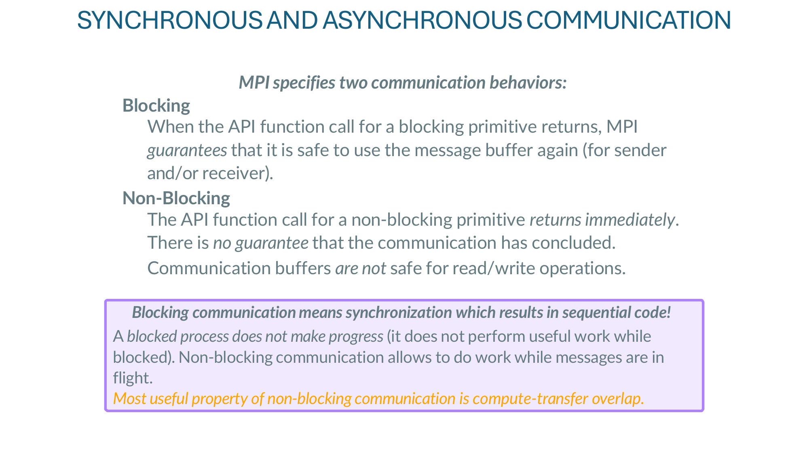
这一页讲 MPI 的另一个二分维度：通信调用是阻塞（blocking）还是非阻塞（non-blocking）。这是 MPI 编程里最关键的性能开关之一。
MPI_Wait 或 MPI_Test 来确认完成。"Blocking communication means synchronization which results in sequential code!" —— 阻塞通信本质上是同步，会让程序退化成串行执行。
具体来说：
MPI_Wait、要小心 buffer 重用），但能藏延迟。性能关键代码、跨节点通信占比大时用。Blocking 不是进程之间的协调机制，而是描述"这一次 MPI 调用什么时候返回"。所以它影响的是同一个进程里"下一行代码什么时候能跑"。
看一段同进程的两行代码：
MPI_Recv(buf, ...); // (a) 收数据到 buf
compute_using(buf); // (b) 用 buf 算东西MPI_Recv）：(a) 不返回 → (b) 不会执行。等 (b) 跑时 buf 一定已经填好。MPI_Irecv）：(a) 立刻返回 → (b) 立刻开始跑。但此时数据可能还在路上，(b) 读到的是垃圾。所以"non-blocking 时 buffer 不安全"的根本原因是：MPI 库在后台往 buf 里写，你的代码同时在读 buf —— 经典的边读边写。必须用 MPI_Wait 等 MPI 写完再访问。
| 调用 | Blocking 返回时保证什么 |
|---|---|
MPI_Recv | buffer 已经填好，可以直接用数据 |
MPI_Send | send buffer 可以重用了（不保证对方已收到 —— 可能还在 MPI 内部 buffer 里） |
这点很容易误解：blocking MPI_Send 返回 不等于"对方收到了"。它只表示"你修改这个 buffer 不会破坏正在发送的数据"。"对方是否收到"在 standard mode 下是看 MPI 实现的（见 slide 34）。
要把通信延迟藏到计算里，标准三步走：
MPI_Request req;
MPI_Isend(prev_results, ..., &req); // (1) 启动发送，立刻返回
compute(next_batch); // (2) 和发送并行进行 ←关键
MPI_Wait(&req, MPI_STATUS_IGNORE); // (3) 等发送完，prev_results 才能再用整体耗时近似 max(通信, 计算)，而不是 通信 + 计算。如果用 blocking MPI_Send，CPU 在通信期间完全闲置，时间就退化成两者之和。
使用约束：(1) 和 (3) 之间，prev_results 这个 buffer 不能改、不能再用，只有 (3) 之后才安全。next_batch 必须是独立的另一块 buffer，否则违反这个约束。
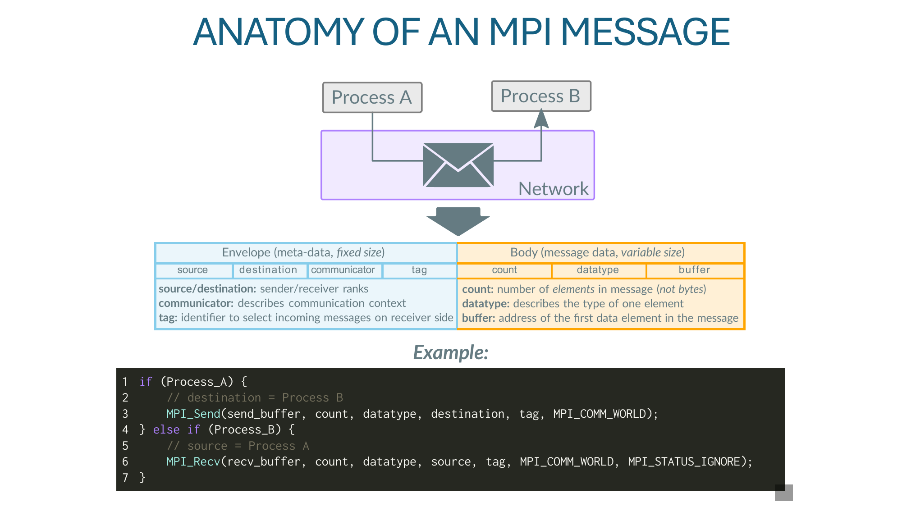
这一页把"一条 MPI 消息"拆开看，里面有两部分：envelope（信封，元数据）和 body（信体，实际数据）。这是后面 MPI_Send/MPI_Recv 参数顺序的来源 —— 看懂这一页参数表就不用死记硬背了。
信封负责"路由"，决定消息从谁发到谁、归哪类。共四个字段：
MPI_INT、MPI_DOUBLE）。MPI 用 datatype + count 自己算字节数，所以你不用算。if (Process_A) {
MPI_Send(send_buffer, count, datatype, destination, tag, MPI_COMM_WORLD);
} else if (Process_B) {
MPI_Recv(recv_buffer, count, datatype, source, tag, MPI_COMM_WORLD, MPI_STATUS_IGNORE);
}对应关系一目了然：前三个参数是 body（buffer / count / datatype），后三个是 envelope（dest 或 source / tag / communicator）。MPI_Recv 末尾多一个 status，用来查接收到的真实元数据，不需要时填 MPI_STATUS_IGNORE。
每个 communicator 创建时，MPI 给它分配一个独立的隐形 ID（context）。这个 ID 不可见、查不到，但 MPI 用它保证不同 communicator 上的消息绝对不会跨域匹配，即使 source / dest / tag 都一致。
Context 是空间维度的隔离层，不是时间维度的"历史"。
典型场景：第三方库。设想你的应用里用了某个 MPI 写的 FFT 库。库内部也发消息，可能也用 MPI_COMM_WORLD、tag=5。如果你的应用代码恰好也在 WORLD 上发 tag=5，两边消息会合法地互相匹配 —— 行为彻底错乱。
正规库的做法：初始化时复制一份属于自己的 communicator：
MPI_Comm lib_comm;
MPI_Comm_dup(MPI_COMM_WORLD, &lib_comm); // 成员同 WORLD，context 不同之后库内部所有通信都用 lib_comm。即使 source/dest/tag 与应用一致，两边永远不会跨匹配。
MPI_Comm_dup 就是干这个的：复制成员列表，分配新的 context。可以重复多次，得到任意多个"成员相同、context 不同"的 communicator。库设计的标准模式 —— 每个独立模块各拿一个，互不干扰。
同一个 communicator 上发出的所有消息共享这个 communicator 的 context ID。它是 communicator 的属性，不是单条消息的属性。完整的消息匹配规则：
context 一致 ← 由 communicator 决定
source/dest 一致
tag 一致 (或 ANY_*)Context 提供"粗粒度的隔离"，source/dest/tag 提供"细粒度的挑选"。
Communicator 像 Slack workspace：每个 workspace 有独立的内部 ID（= context）；同一群人可以加入多个 workspace（= 多次 dup 同一个 group）；在 workspace A 里 @某人，消息绝对不会跑到 workspace B —— 即使两个 workspace 成员完全一样、tag 完全一样。
MPI 不提供查 context ID 的 API。它纯粹是 MPI 内部簿记，用 communicator 句柄作代理。这就是为什么 API 里只传 communicator、不传 context —— 后者隐含在前者里。
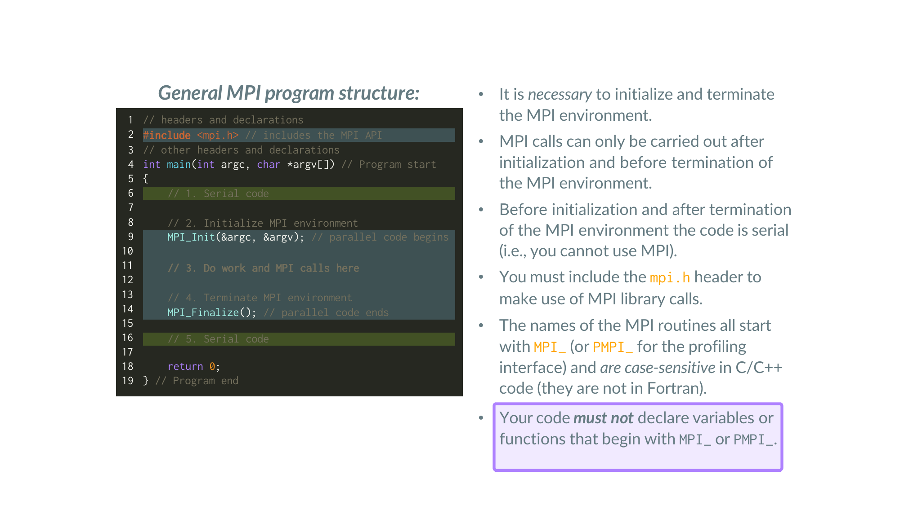
这一页给出每个 MPI 程序都长得很像的"骨架代码"：#include <mpi.h> → MPI_Init → 干活 → MPI_Finalize。
#include <mpi.h>
int main(int argc, char *argv[]) {
// (1) Serial code begin —— 这里还是串行
MPI_Init(&argc, &argv); // (2) parallel code begin
// ... do work and MPI calls here ...
MPI_Finalize(); // parallel code end
// (3) Serial code end —— 这里又回到串行
return 0;
}关键是中间这段才是"MPI 并行段"。MPI_Init 之前和 MPI_Finalize 之后都是串行代码，不能调用任何 MPI 函数。
#include <mpi.h> —— 才能用 MPI 库的声明。MPI_ 开头（profiling 接口用 PMPI_），C/C++ 大小写敏感，Fortran 不敏感。"Your code must not declare variables or functions that begin with MPI_ or PMPI_" —— 你自己定义的变量/函数不能以 MPI_ 或 PMPI_ 开头。这两个命名空间被 MPI 标准独占，你的 MPI_my_var 可能和未来某个 MPI 实现的内部符号冲突，导致莫名链接错误。
MPI_/PMPI_ 自己别用。
MPI_Init(&argc, &argv) 要传命令行参数？历史遗留 + 可选机制。早期 MPI 实现里，mpirun/mpiexec 启动进程时会把自己的参数（守护进程地址、rank 信息等）注入到 argv 里。MPI_Init 拿到 &argc, &argv 后会就地读取并剔除这些"内部参数"，让用户后续解析命令行时只看到自己关心的那些。用指针就是为了支持 in-place 修改数组长度和内容。
MPI-2 之后传 NULL, NULL 也合法 —— 现代实现基本走环境变量传递信息，已经不依赖命令行注入。但 API 签名为了向后兼容保留下来，写 MPI_Init(&argc, &argv) 是约定写法，传不传 NULL 实际行为几乎没差别。
PMPI_）是什么？MPI 标准为每一个 MPI 函数都同时定义了两个入口名：MPI_Xxx（用户调用）和 PMPI_Xxx（同一个函数的"真身"，加 P 前缀）。目的是让性能分析工具能拦截所有 MPI 调用而不需要改用户代码。
机制：profiling 库重新定义 MPI_Send，里面记录时间/字节数后再调 PMPI_Send 走真实通信。用户代码只需要重链接，不用改一行源码就能开关 profiling。
// profiling 库里的 wrapper：
int MPI_Send(const void *buf, int count, MPI_Datatype dt,
int dest, int tag, MPI_Comm comm) {
double t0 = MPI_Wtime();
int rc = PMPI_Send(buf, count, dt, dest, tag, comm);
double t1 = MPI_Wtime();
log_send(dest, count, t1 - t0);
return rc;
}mpiP、Vampir、Scalasca、TAU 这些工具都是基于 PMPI 接口实现的。这就是为什么用户代码不能定义以 MPI_/PMPI_ 开头的符号 —— 这两个命名空间被标准独占用作用户层和"真身"层的入口。
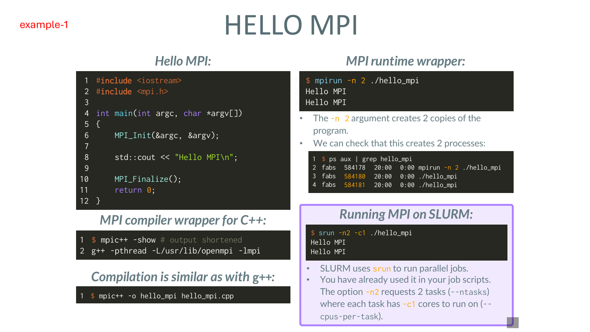
这一页是 MPI 的"Hello World"，重点是从源码到运行的一整套工具链：编译用什么、启动用什么、在 SLURM 集群上又怎么改。
#include <iostream>
#include <mpi.h>
int main(int argc, char *argv[]) {
MPI_Init(&argc, &argv);
std::cout << "Hello MPI\n";
MPI_Finalize();
return 0;
}就是骨架 + 一行 cout。每个进程都会执行这条 cout，所以 -n 2 启动会打两次。
mpic++ 是 MPI 提供的编译器包装器，本质上还是调用 g++，但它替你把 MPI 的头文件路径（-I/...）和库链接（-lmpi）都加上了。slide 用 mpic++ -show 命令证明这一点 —— 输出会展示它实际跑的 g++ 命令很长。日常使用：
mpic++ -o hello_mpi hello_mpi.cpp用法和 g++ 完全一样，所以从普通 C++ 项目迁移很无痛。
mpirun -n 2 ./hello_mpi —— -n 2 让 MPI 启动 2 个进程副本。每个副本都是同一个 ./hello_mpi，但每个进程的 rank 不同（这就是 SPMD：Single Program, Multiple Data）。输出 "Hello MPI" 会打两次。
用 ps | grep hello_mpi 可以看到确实有两个进程在跑。
HPC 集群通常用 SLURM 调度作业。这时候启动 MPI 程序用 srun：
srun -n 2 -c 1 ./hello_mpi-n 2（即 --ntasks=2）—— 申请 2 个 task，对应 2 个 MPI 进程。-c 1（即 --cpus-per-task=1）—— 每个 task 用 1 个 CPU 核心。如果你的程序还混了 OpenMP，可以把这个调高，让每个 MPI 进程内部多线程。语义和 mpirun -n 2 一致，但 srun 让 SLURM 接管资源分配，所以会按你的作业脚本里申请的节点和 CPU 走。
mpic++ 编译，mpirun 启动（本机），srun 启动（SLURM 集群）。-n N 决定起几个进程；同一份代码每个进程都跑一遍，靠 rank 区分。
-pthread 编译选项是什么？为什么 mpic++ -show 里会出现？-pthread 是 GCC/Clang 的编译+链接 flag，做三件事：(1) 链接 libpthread；(2) 定义 _REENTRANT 宏，让标准库走线程安全版本（如 errno 变成 per-thread）；(3) 设置编译器里线程相关的代码生成选项。
它出现在 mpic++ -show 输出里，不是因为用户程序要多线程，而是因为 MPI 库本身用 pthread 实现内部功能（异步通信进度推进、RMA 推进、某些 I/O 后台线程等）。链接 MPI 库的程序必须带 -pthread 才能解析这些符号，所以纯 MPI 单线程程序也会看到这个 flag。
-pthread vs -lpthread：后者只链接库不做其他事，是过时写法；现代用法都用 -pthread。
-c 和 MPI 进程的对应关系？SLURM 的 task 是个通用资源单位，含义是"启动一份程序的实例"。SLURM 自己不知道这份实例里跑什么，只负责按 -n 指定的数量去启动。对 MPI 程序，1 task = 1 MPI 进程 = 1 rank。
| 选项 | 控制什么 | 对应 MPI 概念 |
|---|---|---|
-N (--nodes) | 物理节点数 | 程序分布在几台机器上 |
-n (--ntasks) | 进程总数 | MPI 进程总数（= 总 rank 数） |
-c (--cpus-per-task) | 每个进程预留的 core 数 | MPI 进程内 OpenMP 线程数上限 |
-N 和 -n 是独立的旋钮：-N 1 -n 4 是单节点跑 4 进程，-N 4 -n 4 是 4 节点各跑 1 进程，-N 2 -n 8 是 2 节点每节点 4 进程。
-c 的真正用途是给一个 task 预留多个 core 让它内部开多线程，最典型场景是 MPI + OpenMP 混合并行 —— 每个 MPI 进程独占多个 core 跑 OpenMP 线程。如果不指定，默认每个 task 1 个 core，你 OpenMP 开多线程会全挤在一个 core 上互相抢，性能反而崩。
能，而且单节点多 MPI 进程是常态。现代 node 一般有 64-128 个 core，1 节点 1 进程会浪费绝大多数算力。实际部署有两种主流模式：
MPI 的"分布式"指的是内存模型，不是物理位置。模型层规定每个进程独立地址空间、必须显式 send/recv 通信；物理层进程在哪、隔多远、怎么连，都不影响代码正确性。用户代码 MPI_Send 的写法跨节点和同节点完全一致。
同节点通信底层走共享内存，不走网络。MPI 库会自动检测两个 rank 是不是在同一台机器，挑最快的传输方式：
| 通信场景 | 底层用什么 | 延迟量级 |
|---|---|---|
| 跨节点 | InfiniBand / Ethernet | μs–ms |
| 同节点跨 socket | 共享内存（POSIX shm / CMA / XPMEM） | 0.1–1 μs |
| 同 socket | L3 cache + 共享内存 | <0.1 μs |
用户代码完全不感知传输方式的切换 —— 这是 MPI 抽象的核心威力：同一份代码，跨节点能跑，单节点也能跑。
关键区分：物理 RAM 共享 ≠ 进程地址空间共享。同 node 上所有 core 物理上确实共享同一块 RAM 和 L3 cache —— 这是硬件事实。但 OS 给每个 process 维护独立的 page table（虚拟地址 → 物理地址的映射），主动强制隔离它们的地址空间：Process A 的 page table 里根本没有指向 Process B 物理页的条目，所以 A 不管怎么折腾自己的指针，MMU 硬件都不会把它解析到 B 的物理页。
| 单位 | 共享物理 RAM | 共享虚拟地址空间 | 能直接读对方变量 |
|---|---|---|---|
| 同进程内多 thread | ✓ | ✓ | ✓ |
| 同节点多 process | ✓ | ✗ | ✗ |
| 跨节点多 process | ✗ | ✗ | ✗ |
所以 thread 能直接读共享变量、process 不能 —— 原因不是物理内存隔离，而是 OS 在 page table 上主动隔离。MPI 选 process 这种隔离单位，正是为了让"同节点"和"跨节点"在编程模型上完全统一。
MPI 同节点 shm 通信的实际机制：双方主动调 shm_open/mmap，让 OS 把同一物理页同时挂进两份 page table，形成一块"共享窗口"作为消息缓冲区。普通变量仍然各自隔离，只有这扇用户看不见的窗口是共享的。
srun 启动 MPI 程序，不用 mpirun？因为 srun 是 SLURM 自带的启动器，通过 PMI/PMIx 协议直接和 MPI 库握手，可以跳过 mpirun 这一层。
集群上的 MPI 库（OpenMPI / MPICH / Intel MPI）通常编译进了 PMI/PMIx 客户端，srun 内置 PMI/PMIx 服务端。启动流程：
srun -n 4 a.out 在 SLURM 已分配的节点上启动 4 个 a.out。a.out 调 MPI_Init。MPI_Init 通过环境变量发现 srun 提供的 PMI 服务，连过去问"我是谁？其他 rank 在哪？"。为什么集群推荐 srun 而不是 mpirun：
srun 启动的进程都在 SLURM 视野里，CPU 时间和内存正确记账；mpirun 自己 fork 可能绕过 SLURM 的 cgroup 限制。srun 知道 SLURM 分配了哪些具体 core，按 --cpu-bind 钉得准。mpirun 进程。scancel、squeue、sacct 对 SLURM 启动的进程才完整有效。一句话：集群上 SLURM 是统一入口，srun 既负责资源管理又负责 MPI 进程启动 —— mpirun 那层在集群环境里是多余的。
OS 调度层面，process 和 thread 都是 task_struct，调度器一视同仁。一个 core 在某一时刻只能跑一份指令流，靠时间片轮转让多个 task "看起来同时在跑"。所以 process 默认不绑死在某个 core，OS 调度器可以自由把它从 core 0 迁到 core 5。"一个 core 处理多个进程，他们排队"这个理解是对的，是 OS 默认行为。
但 HPC / MPI 场景主动绑核（CPU affinity / pinning）几乎是标配，理由：
绑核机制：srun --cpu-bind=cores / Linux 系统调用 sched_setaffinity / taskset。绑核之后进程只能在指定 core 上调度。
注意：绑核 ≠ 独占。绑核只限制"自己的进程不能离开指定 core"，但其他进程（系统服务、cron job）仍可能被调度到同一个 core 上来抢时间片。真要独占整段 core，得靠 SLURM 的 cgroup + cpuset 整节点隔离。
SMT (Hyperthreading)：现代 CPU 一个物理 core 通常带 2 个硬件线程上下文，OS 看到的逻辑 core 数 = 物理 core × 2。同一物理 core 的两个 SMT 上下文同时跑两份 task 时不是排队，是真并发，但共享 L1/L2 和执行单元会互相干扰。HPC 一般关掉 SMT 或只用一半逻辑 core。
Socket = 主板上的物理 CPU 插槽，每个 socket 装一颗 CPU 芯片（package）。"双 socket 服务器"就是主板上两个插槽各装一颗 CPU。Cache 长在 CPU 芯片内部，所以 cache 的"作用域"被 socket 这条物理边界划分。
典型双 socket 服务器（每 socket 8 core）的拓扑：
┌──────────────────────────────────────────────────────────┐
│ Socket 0 (一颗 CPU) │
│ ┌──────┬──────┬──────┬──────┬──────┬──────┬──────┬─────┐│
│ │Core 0│Core 1│Core 2│Core 3│Core 4│Core 5│Core 6│Core7││
│ │L1+L2 │L1+L2 │L1+L2 │L1+L2 │L1+L2 │L1+L2 │L1+L2 │L1+L2││ ← L1/L2 每 core 独占
│ └──────┴──────┴──────┴──────┴──────┴──────┴──────┴─────┘│
│ ┌──────────────────────────────────────────────────────┐│
│ │ L3 cache (8 个 core 共享，~32 MB) ││ ← L3 socket 内共享
│ └──────────────────────────────────────────────────────┘│
│ ┌──────────────────────────────────────────────────────┐│
│ │ Memory Controller → Local DRAM (~128 GB) ││ ← 本 socket 的近内存
│ └──────────────────────────────────────────────────────┘│
└──────────────────────────────────────────────────────────┘
↕ UPI / Infinity Fabric (插槽间互连)
┌──────────────────────────────────────────────────────────┐
│ Socket 1 (另一颗 CPU，结构对称，独立的 L3 和 DRAM) │
└──────────────────────────────────────────────────────────┘Cache 归属规则：
| 层级 | 归属 | 典型大小 | 延迟 |
|---|---|---|---|
| L1 (data + instruction) | 每个 core 独占 | 32-64 KB / core | ~1 ns |
| L2 | 每个 core 独占（或每对 core 共享） | 256 KB - 2 MB / core | ~3-10 ns |
| L3 (LLC) | 同 socket 内所有 core 共享 | 16-100 MB / socket | ~10-40 ns |
| DRAM (本 socket) | 同 socket 内 core 共享 | 几十-几百 GB | ~80-100 ns |
| DRAM (远 socket) | 跨 UPI 访问 | — | ~150-300 ns |
关键三点：
这就是为什么 MPI + OpenMP 混合并行的最佳实践是"每 socket 一个 MPI 进程"：进程内的 OpenMP 线程共享这个 socket 的 L3 和本地 DRAM，跨 socket 才走 MPI 显式消息 —— 让每个进程的工作集尽量留在自己 socket 的 cache + NUMA 域里。
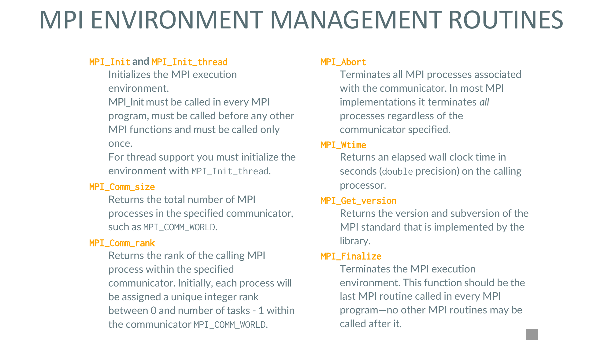
这一页是"必须认识的 7 个 MPI 函数"清单。它们不参与通信本身，但每个 MPI 程序都会用到。
MPI_Init / MPI_Init_thread —— 启动 MPI 运行环境。每个 MPI 程序里必须调一次，且只能一次，必须在所有其他 MPI 函数之前。如果程序还要多线程，用 MPI_Init_thread 来声明所需的线程支持级别（详见 slide 26）。MPI_Finalize —— 终止 MPI 环境。必须是最后一个 MPI 调用，之后任何 MPI 函数都不能再调。MPI_Abort —— 紧急刹车：终止某个 communicator 上的所有进程。多数实现里它直接终止整个程序的所有进程，无视你传的 communicator。出错时强制退出常用它。MPI_Comm_size(comm, &size) —— 查给定 communicator 里总共有多少个进程。例如 MPI_Comm_size(MPI_COMM_WORLD, &size) 返回 mpirun -n N 里的 N。MPI_Comm_rank(comm, &rank) —— 查"我"在这个 communicator 里的 rank。每个进程独立调，得到的值不同，从 0 到 size-1。这是写 SPMD 代码区分进程的关键 —— "if (rank == 0) ... else ..."。MPI_Wtime() —— 返回 wall clock 时间（秒，double 精度）。差两次调用得到代码段执行时间，是 MPI 程序里测性能的标准做法。MPI_Get_version —— 查当前链接的 MPI 实现到底实现的是 MPI 标准的哪个版本/子版本（比如 3.1、4.0）。MPI_Init / MPI_Finalize 一对，MPI_Comm_size / MPI_Comm_rank 一对。会这四个就能写大部分入门 MPI 代码。其他 3 个（Abort/Wtime/Get_version）按需查。
MPI_Comm_size 的值会受绑核或硬件 core 数影响吗？不会。进程数完全由启动器的 -n 参数决定，跟绑核、硬件 core 数、调度策略都无关。MPI_Init 时通过 PMI/PMIx 从启动器拿到 N，直接写进 MPI_COMM_WORLD。后续怎么调度只影响进程在哪个 core 上跑，不影响进程数量。
| 场景 | -n | 硬件 core | MPI_Comm_size |
|---|---|---|---|
单核机器跑 mpirun -n 4 | 4 | 1 | 4（4 进程时间片轮转共用 1 core） |
64 核服务器跑 mpirun -n 2 | 2 | 64 | 2（其余 62 个 core 闲着） |
mpirun -n 8 在 4 核机器上 | 8 | 4 | 8（每 core 分时跑 2 进程） |
所以 slide 上"MPI_Comm_size(MPI_COMM_WORLD, &size) 返回 mpirun -n N 里的 N"是无条件成立的事实查询。
单线程进程：任意瞬间只用一个 core（OS 可以迁移它，但一个时刻一个 core）。
多线程进程：可以同时占多个 core。线程是独立的调度单位（独立 task_struct），N 个线程可以被分配到 N 个 core 上并行执行，共享进程的地址空间。MPI + OpenMP 就吃这个机制 —— srun -n 4 -c 8 给每个 MPI 进程分 8 个 core，进程内开 8 个 OpenMP 线程并行跑。
跨 core 共享数据有代价 —— 但不是用户层 copy-paste，是硬件自动做的 cache coherence (MESI 协议)。机制叫 cache line ping-pong：
Core 0 写 X = 5
→ MESI 广播 invalidate 给 Core 1
→ Core 1 的 L1 副本作废
→ Core 0 副本变 Modified (~30 ns)
Core 1 想读 X
→ L1 已作废，未命中
→ 协议把 Core 0 的副本经 L3 转给 Core 1 (~30-50 ns)同一条 cache line 在两个 core 之间反复传递就是 ping-pong，会成为性能瓶颈。
False sharing（假共享）：两个线程改的是不同变量，但变量恰好落在同一条 cache line（cache line 通常 64 字节）。逻辑上无冲突，硬件却照样 ping-pong —— 代码看起来无锁，性能比单线程还慢。修复：用 alignas(64) 或 padding 把变量分到不同 cache line。
代价分级（这是 MPI + OpenMP 设计的核心依据）：
| 共享方式 | 延迟量级 | 触发场景 |
|---|---|---|
| 同 core L1 命中 | ~1 ns | 局部变量 |
| 同 socket L3 / coherence | ~30-50 ns | OpenMP 线程跨 core 共享 |
| 跨 socket UPI 协调 | ~150-300 ns | 跨 socket 共享数据 |
| 同节点 MPI 消息 (shm) | ~1 μs | MPI ranks 跨进程通信 |
| 跨节点 MPI 消息 (网络) | ~5-100 μs | MPI ranks 跨节点通信 |
为什么"每 socket 一个 MPI 进程 + 进程内开 OpenMP 线程"是甜蜜点：socket 内用 OpenMP 共享 L3（~50 ns），socket 外用 MPI 显式消息（~1 μs）。把"低成本共享"留给硬件 coherence，把"高成本通信"用程序员可控的 MPI 显式管 —— 每一档代价对应最匹配的工具。
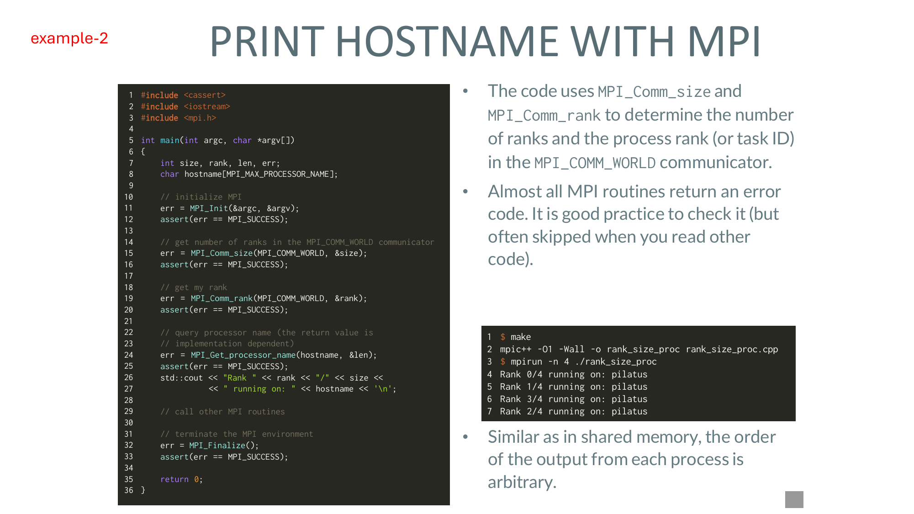
这一页是 example-2，比 Hello MPI 进一步 —— 让每个进程报告自己的 rank、总进程数、所在主机名。完整地用上了 slide 24 的几个环境管理函数。
int rank, size, len;
char hostname[MPI_MAX_PROCESSOR_NAME];
MPI_Init(&argc, &argv);
err = MPI_Comm_size(MPI_COMM_WORLD, &size); assert(err == MPI_SUCCESS);
err = MPI_Comm_rank(MPI_COMM_WORLD, &rank); assert(err == MPI_SUCCESS);
err = MPI_Get_processor_name(hostname, &len); assert(err == MPI_SUCCESS);
std::cout << "Rank " << rank << "/" << size
<< " running on: " << hostname << "\n";
MPI_Finalize();MPI_Get_processor_name(buf, &len) —— 把当前进程所在节点的主机名写入 buf，长度写入 len。debug "我跑在哪台机器上"时常用。MPI_MAX_PROCESSOR_NAME 是标准定义的最大长度常量，分配数组用它最稳。err 接返回值，再 assert(err == MPI_SUCCESS)。slide 强调：几乎所有 MPI 函数都返回错误码，建议检查，但实际工程里常被省略。MPI_SUCCESS 是成功返回的标准常量。$ mpirun -n 4 ./rank_size_proc
Rank 0/4 running on: platus
Rank 3/4 running on: platus
Rank 1/4 running on: platus
Rank 2/4 running on: platus4 个进程都跑在同一台机器（platus）上，因为只是本地测试。
slide 最后一条 bullet 点出来："Similar to shared memory, the order of the output from each process is arbitrary" —— 跟 OpenMP 多线程一样，多进程同时往 stdout 写，谁先 flush 谁先出现，OS 不保证 rank 顺序。要排序输出只能让 rank 0 收齐再打印（用通信汇总）。
MPI_Get_processor_name + rank 是 debug 分布式 bug 时的好朋友，能立刻看出"哪个节点上的哪个进程"出问题；(2) MPI 输出顺序不可控，别假设它按 rank 来。
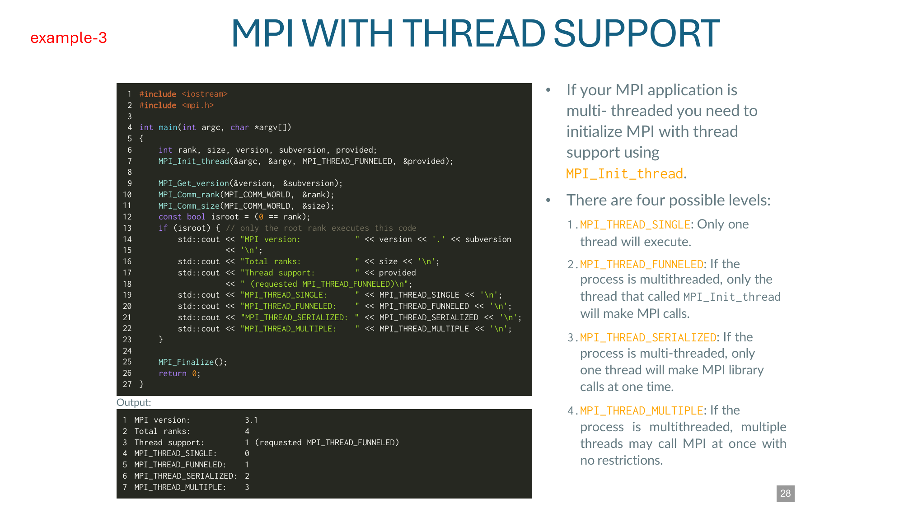
这一页讲当 MPI 进程内部还要开多线程（MPI + OpenMP / pthread）时怎么处理。MPI 不是默认就线程安全的，必须明确声明你打算怎么用线程。这就是 MPI_Init_thread 和它的"四个级别"的存在原因。
MPI_Init_thread 替代 MPI_Init调用形式：
int required = MPI_THREAD_FUNNELED; // 你期望的级别
int provided;
MPI_Init_thread(&argc, &argv, required, &provided);你提"我想要这种线程支持"，MPI 实现告诉你"我能给的是哪种"。provided 不一定等于 required —— 实现可能给得比你要的低（不够用）或高（够用）。所以拿到 provided 后通常要检查是否满足需求。
MPI_THREAD_SINGLE —— 进程里只有一个线程。最简单，等同于不启用线程支持。MPI_THREAD_FUNNELED —— 进程可以多线程，但只有调用了 MPI_Init_thread 的那一个线程（通常是主线程）能调 MPI 函数。其他线程只能算它们自己的活。这是最常见的"MPI + OpenMP"模式：主线程做 MPI 通信，其他 OpenMP 线程并行算。MPI_THREAD_SERIALIZED —— 多线程都可以调 MPI，但同一时刻只能有一个 在调（你需要自己加锁/同步保证）。MPI_THREAD_MULTIPLE —— 完全自由，多个线程可以同时调用 MPI，无任何限制。最灵活，但实现起来最重，不是所有 MPI 实现都对它支持得很好。slide 输出框里：
MPI_THREAD_SINGLE: 0
MPI_THREAD_FUNNELED: 1
MPI_THREAD_SERIALIZED: 2
MPI_THREAD_MULTIPLE: 3这四个常量在 MPI 头文件里就是 0/1/2/3，所以 "provided >= required" 这种比较是合法的，可以直接判断"实际给的级别够不够"。例如要求 SERIALIZED（2），实际拿到 MULTIPLE（3）也是 OK 的。
MPI_Init 就行。混合 MPI+OpenMP 一般用 MPI_THREAD_FUNNELED（最常见、最稳）。需要多线程同时通信再升 SERIALIZED/MULTIPLE，但要确认实现真的支持。
Funnel = 漏斗。FUNNELED 的语义是：进程内可以多线程，但所有 MPI 调用必须从一个固定的"窄口" —— primary 线程 —— 过去。线程团队的活最后通信这一步要被"漏到"主线程上。
FUNNELED：经典 MPI + OpenMP fork-join
MPI_Init_thread(&argc, &argv, MPI_THREAD_FUNNELED, &provided);
double local_sum = 0.0;
#pragma omp parallel for reduction(+:local_sum)
for (int i = 0; i < N; i++) {
local_sum += heavy_compute(i); // 并行区不调 MPI
}
// 出 parallel 区，只剩 master thread 在跑
double global_sum;
MPI_Reduce(&local_sum, &global_sum, 1, MPI_DOUBLE,
MPI_SUM, 0, MPI_COMM_WORLD); // 只 master 调 MPI结构上保证"只 primary 调 MPI"，不需要锁。
SERIALIZED：任何线程都能调，但用户加锁串行
MPI_Init_thread(&argc, &argv, MPI_THREAD_SERIALIZED, &provided);
#pragma omp parallel
{
int tid = omp_get_thread_num();
double partial = compute_partial(tid);
#pragma omp critical
{
MPI_Send(&partial, 1, MPI_DOUBLE,
0, tid, MPI_COMM_WORLD);
}
}每线程发自己的数据，省去了汇总到 master 的中间步骤；但 critical 强制串行，用户必须自己保证一次只一个线程进 MPI。
MULTIPLE：多线程真并发调 MPI
MPI_Init_thread(&argc, &argv, MPI_THREAD_MULTIPLE, &provided);
if (provided < MPI_THREAD_MULTIPLE) MPI_Abort(MPI_COMM_WORLD, 1);
#pragma omp parallel
{
int tid = omp_get_thread_num();
double partial = compute_partial(tid);
// 没 critical，多线程同时进入 MPI 库
MPI_Send(&partial, 1, MPI_DOUBLE,
0, tid, MPI_COMM_WORLD);
}用户不需要任何同步，库内部自己加锁。开销最高，但部分实现/网卡支持下能吃满硬件多通道。
关键拆分两层独立的并发：
| 层次 | 并发参与者 | 是否有冲突风险 | 由谁解决 |
|---|---|---|---|
| 进程间 | 不同 ranks 的 primary thread | 永远不冲突 | MPI 协议本身（消息匹配引擎） |
| 进程内 | 同 process 的多个 thread | 可能冲突 | 线程支持级别契约 |
进程间永远不冲突的原因：每个 process 只读写自己私有内存。MPI_Send 是从自己的 send_buf 读数据交给库；MPI_Recv 是让库往自己的 recv_buf 写数据。两个 process 的内存是隔离的，根本没有"两个 process 同时写一份内存"这种情况。多个 send 同时到达接收方时，库的消息匹配引擎按 envelope (source, tag, comm) 配对，每条 Send 恰好被一次 Recv 消费，FIFO 保证（同一对 sender→receiver 的消息不会乱序）。
进程内可能冲突的原因：MPI 库内部的数据结构（消息队列、待匹配请求列表、网络缓冲区状态）在一个 process 里是单一实例，多个 thread 同时改它们就是经典 race。线程级别契约就是为了管这件事。
"谁能调"和"能否真并发"是两个独立维度，注意 SERIALIZED 不是允许并发，而是"谁都能调但仍然 1 次 1 个"：
| 级别 | 谁能调 | 同时刻 MPI 调用数 |
|---|---|---|
| FUNNELED | 只 primary | 1（结构上保证） |
| SERIALIZED | 任何线程 | 1（用户加锁保证） |
| MULTIPLE | 任何线程 | 多个（库内部加锁保证） |
SERIALIZED 相对 FUNNELED 的真正收益是代码结构：每线程直接发自己的数据，省去汇总到 master 的中间步骤；但同时刻 MPI 调用数仍是 1，性能上限和 FUNNELED 一样。要真正多个 MPI 同时进行，必须 MULTIPLE。
有两个独立的并发维度，可以单独用也可以组合用：
| 单线程 | 多线程 (MULTIPLE) | |
|---|---|---|
| Blocking MPI | 同时 1 个调用 | 同时 N 个调用（N 线程各自阻塞） |
| Non-blocking MPI | 同时多个 in-flight | 同时 N × M 个 in-flight |
维度 1：non-blocking 调用（单线程就能做到）
MPI_Request reqs[3];
MPI_Isend(buf1, ..., dest=1, ..., &reqs[0]); // 立即返回
MPI_Isend(buf2, ..., dest=2, ..., &reqs[1]); // 立即返回
MPI_Isend(buf3, ..., dest=3, ..., &reqs[2]); // 立即返回
// 三个 send 同时在路上飞
do_other_compute();
MPI_Waitall(3, reqs, MPI_STATUSES_IGNORE);Isend/Irecv 把"启动通信"和"等待完成"分离，函数立即返回 request 句柄，真正搬运由库后台进行。一个线程能同时维持任意多个 in-flight 操作。Collective（Bcast/Allreduce/Alltoall）一次调用底下也是触发多对多并发传输，但用户只见一个 API。
维度 2：多线程并发 MPI（仅 MULTIPLE）
FUNNELED/SERIALIZED 同时刻只有 1 个 MPI 调用；MULTIPLE 下多个线程才真的并发进入 MPI 库。
实战常见组合：FUNNELED + 主线程内大量 non-blocking 调用 —— 既保证 MPI 库零锁开销，又通过 non-blocking 达到计算-通信重叠和多 peer 并发。MULTIPLE 只在每线程对接独立的网络流（如每线程一个 GPU stream）时才有额外收益。
硬件层是否真并行：
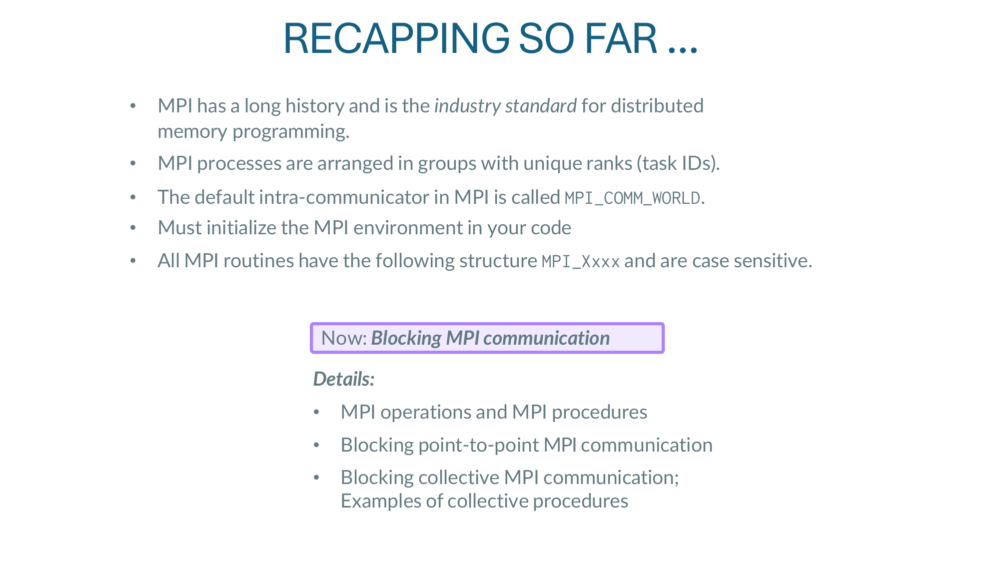
这是个分段标志页，回顾前面已经讲过的内容并预告下一阶段。
MPI_COMM_WORLD。MPI_Xxxx，大小写敏感。Blocking MPI communication —— 阻塞式 MPI 通信，三个子主题：
看路标即可，无需多解释。
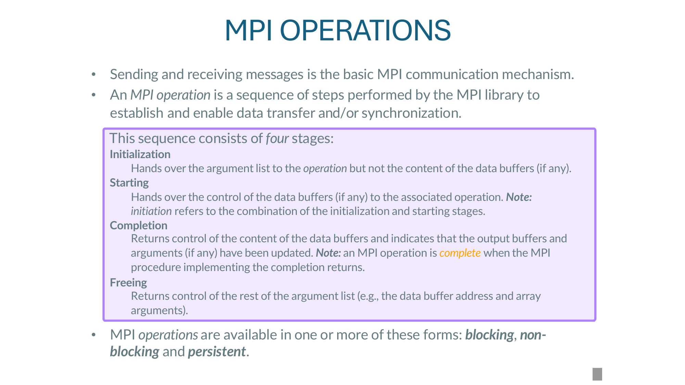
这一页定义了一个核心概念：MPI operation（MPI 操作）。它是一个抽象，指"完成一次通信所需的所有步骤"。这个抽象让我们能统一描述 blocking / non-blocking / persistent 三种通信形式 —— 它们其实都在做这四个阶段，只是把阶段切分到不同的函数调用里。
An MPI operation is a sequence of steps performed by the MPI library to establish and enable data transfer and/or synchronization —— MPI operation 是 MPI 库为了建立并完成一次数据传输或同步所走的整个流程。
"initiation" 一词是 initialization + starting 两阶段的合称（注意和 initialization 单独那阶段区分）。
slide 末尾点出：MPI operations are available in one or more of these forms: blocking, non-blocking, and persistent. 这三种形式的差别就在于：同一个 operation 的四个阶段，被拆到几个函数调用里去。下一页 slide 29 用图说明。
MPI_Send（blocking）和 MPI_Isend（non-blocking）时，记得它们都在跑同样的四阶段，只是打包方式不同。这样就理解了"non-blocking 为什么需要再调一次 MPI_Wait" —— 因为那次调用是负责 completion + freeing 的。
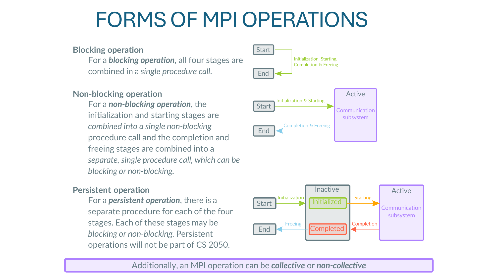
这一页用图把 slide 28 的四阶段在三种形式里如何切分讲明白。
四个阶段全部塞进一个函数调用。MPI_Send 一调，从 init 到 freeing 全干完才返回。
图示：Start → [Initialization | Starting | Completion | Freeing] → End。整个过程是一段连续的同步执行。
四个阶段被切成两半：
MPI_Isend）—— 完成 Initialization + Starting，立刻返回。MPI 在后台启动通信子系统跑通信。MPI_Wait）—— 完成 Completion + Freeing。这个调用本身可以是 blocking 或 non-blocking。图示：Start → [Init | Start] → End；中间通信子系统在跑；用户进程稍后再调一次 → [Completion | Freeing] → End。期间用户进程可以做别的工作 —— 这就是 slide 20 讲的 compute-transfer overlap 的实现机制。
四个阶段每一个都有独立的函数调用。可重复利用一次"建立好的通信通道"反复发同样配置的消息（比如循环里每步都和同一个邻居交换同样大小的数据）。每一阶段调用都可以是 blocking 或 non-blocking。
图示有 Inactive (Initialized) 和 Active (Started, 通信子系统在跑) 两个状态，最后到 Completed。
slide 明确说："Persistent operations will not be part of CS 2050." —— 这门课不考，了解概念即可。
"Additionally, an MPI operation can be collective or non-collective" —— 上面三种形式（blocking/non-blocking/persistent）是一个分类维度；collective vs non-collective 是另一个独立维度。两个维度正交：例如可以有"非阻塞集合通信"（MPI_Ibcast），也可以有"阻塞点对点"（MPI_Send）。
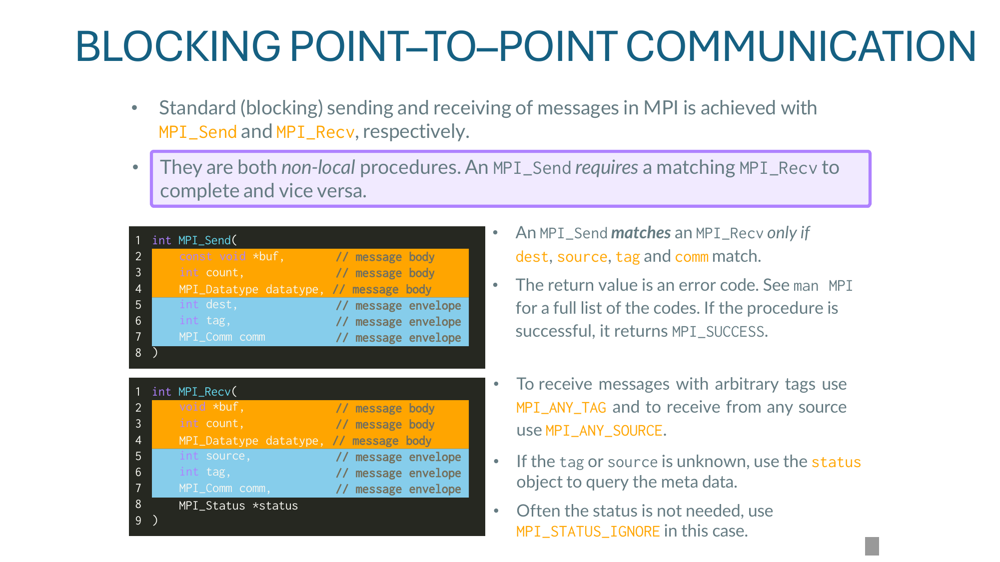
这一页正式介绍 MPI 最基本的两个函数：MPI_Send 和 MPI_Recv。
int MPI_Send(
void *buf, int count, MPI_Datatype datatype, // body
int dest, int tag, MPI_Comm comm // envelope
);
int MPI_Recv(
void *buf, int count, MPI_Datatype datatype, // body
int source, int tag, MPI_Comm comm, // envelope
MPI_Status *status // 元数据回填
);参数顺序就是 slide 21 讲过的"body 三件套 + envelope 三件套"。MPI_Recv 末尾多一个 status。
slide 紫色框："They are both non-local procedures. An MPI_Send requires a matching MPI_Recv to complete and vice versa."
"non-local" 在 MPI 术语里意思是这个调用是否完成不只取决于本地状态，还取决于另一个进程。MPI_Send 要"完成"就必须有一个匹配的 MPI_Recv 在对方进程上 —— 否则它可能一直挂着。这是阻塞点对点通信的本质。
An MPI_Send matches an MPI_Recv only if dest, source, tag and comm match.
四个 envelope 字段必须同时对得上：
dest = 接收方进程的 rank。source = 发送方进程的 rank。tag 相同。MPI_ANY_TAG —— 接收方"我不关心 tag 是几，任意 tag 都收"。MPI_ANY_SOURCE —— 接收方"我不关心是谁发的，任何进程发的都收"。用了通配符后，status 就有用了 —— 可以查出实际收到的消息真正是从哪个 source、哪个 tag 来的。如果你不需要这些信息（多数情况），传 MPI_STATUS_IGNORE 让 MPI 跳过填充。
返回值是错误码，成功时是 MPI_SUCCESS。完整列表可以 man MPI 查。
MPI_STATUS_IGNORE 即可。
MPI_ANY_SOURCE 还算 point-to-point 吗？是不是变成 broadcast / 集体通信了？仍然是 point-to-point。MPI_ANY_SOURCE 只是接收方的通配符，放宽了"我要收谁的"这一条匹配规则。它没改变通信的根本机制 —— 一次 MPI_Recv 仍然恰好接收一条消息，发送方依然必须明确写 dest。
关键事实：
status.MPI_SOURCE 告诉你这次到底收的是谁的。和 broadcast/collective 的本质区别：
| P2P + ANY_SOURCE | Broadcast (collective) | |
|---|---|---|
| 谁参与 | 只调 Send/Recv 的进程 | 全员必须参与 |
| API 形态 | Send / Recv 是两个不同函数 | 所有进程调同一个 MPI_Bcast |
| 一次调用收几条 | 1 条 | 一次发给所有人 |
| 不参与的进程会怎样 | 没事 | 整个程序死锁（collective 必须到齐） |
典型用途：master-worker 模式。master 不知道哪个 worker 先算完，用 ANY_SOURCE 收第一个上报的结果：
// rank 1, 2, 3 各自完成后：
MPI_Send(&my_result, 1, MPI_INT, 0, TAG_RESULT, MPI_COMM_WORLD);
// rank 0 循环收 3 次，谁先到收谁
for (int i = 0; i < 3; i++) {
MPI_Status status;
MPI_Recv(&result, 1, MPI_INT, MPI_ANY_SOURCE, TAG_RESULT,
MPI_COMM_WORLD, &status);
printf("Got from rank %d\n", status.MPI_SOURCE);
}这里发生了 3 次独立的 point-to-point 通信，互相不"广播"给别人，每条消息只到 rank 0。要广播必须显式调 MPI_Bcast / MPI_Reduce / MPI_Gather 等 collective API。
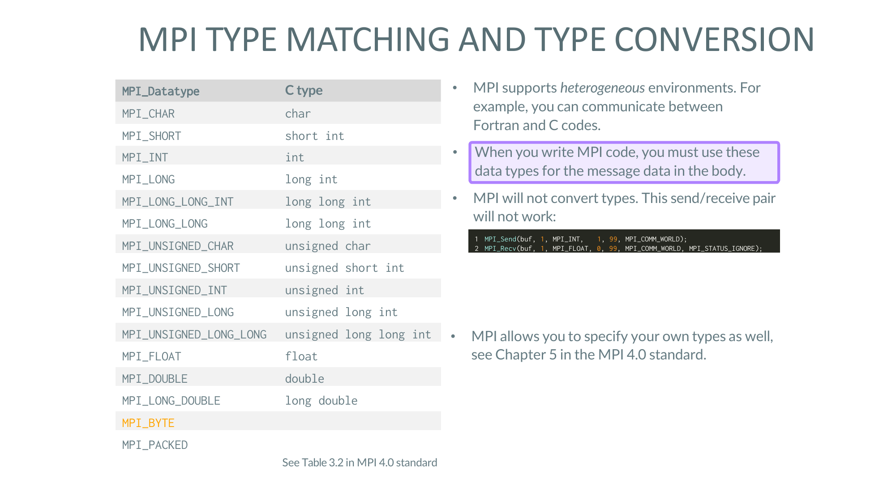
这一页给出 MPI 内置数据类型表，并强调一条关键约束：MPI 不会做类型转换，发送和接收的类型必须严格对应。
| MPI_Datatype | C 类型 |
|---|---|
MPI_CHAR | char |
MPI_SHORT | short int |
MPI_INT | int |
MPI_LONG | long int |
MPI_LONG_LONG / MPI_LONG_LONG_INT | long long int |
MPI_UNSIGNED_CHAR / SHORT / _ / LONG / LONG_LONG | 对应 unsigned 版本 |
MPI_FLOAT | float |
MPI_DOUBLE | double |
MPI_LONG_DOUBLE | long double |
MPI_BYTE | 无对应（按字节传，不解释类型） |
MPI_PACKED | 用于 MPI_Pack/Unpack 自定义打包 |
MPI_INT、recv 端写 MPI_FLOAT 不会自动 cast，会出错。两端类型必须一致。int/float。对于结构体或不连续内存，MPI 允许你用 MPI_Type_create_* 系列函数定义自己的类型（详见 MPI 4.0 标准 Chapter 5）。课程不深入，知道有就行。
MPI_INT 这种 MPI 常量，不是 C 类型；(2) 双方类型必须严格一致，MPI 不替你 cast；(3) MPI_BYTE 是"按字节当无类型数据传"的逃生通道。
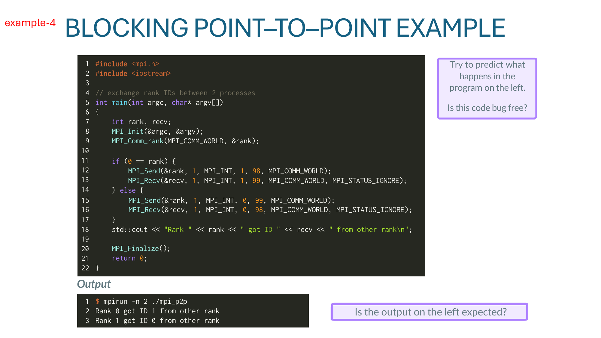
这一页给出 example-4 的代码，让你预测它会怎么样、有没有 bug。下一页给答案。
MPI_Init(&argc, &argv);
MPI_Comm_rank(MPI_COMM_WORLD, &rank);
if (0 == rank) {
MPI_Send(&rank, 1, MPI_INT, 1, 98, MPI_COMM_WORLD);
MPI_Recv(&recv, 1, MPI_INT, 1, 99, MPI_COMM_WORLD, MPI_STATUS_IGNORE);
} else {
MPI_Send(&rank, 1, MPI_INT, 0, 99, MPI_COMM_WORLD);
MPI_Recv(&recv, 1, MPI_INT, 0, 98, MPI_COMM_WORLD, MPI_STATUS_IGNORE);
}
std::cout << "Rank " << rank << " got ID " << recv << " from other rank\n";
MPI_Finalize();逻辑：rank 0 和 rank 1 互相发自己的 rank 给对方。注意两边都是先 MPI_Send 后 MPI_Recv。
$ mpirun -n 2 ./mpi_p2p
Rank 0 got ID 1 from other rank
Rank 1 got ID 0 from other rank看起来一切正常 —— 程序成功结束、两边都收到对方 ID。slide 紫色框抛出问题："Is this code bug free?""输出符合预期吗？"答案在 slide 33。
MPI_Init 而不是 MPI_Init_thread？因为这段代码没有任何多线程 —— 没 OpenMP、没 pthread、没 std::thread。每个 MPI process 从头到尾只有一个 main 线程在跑，所以 MPI_Init（等价于 MPI_THREAD_SINGLE 契约："我承诺只有一个线程"）自动满足。
只要代码里出现 #pragma omp parallel / pthread_create / std::thread 等任何线程构造，就必须切到 MPI_Init_thread 显式声明级别 —— 哪怕只让 master 调 MPI（FUNNELED）。否则违反 SINGLE 契约，行为 undefined。
MPI 把 form（blocking/non-blocking/persistent）编码在函数名里，不是参数：
| Form | Send 名 | Recv 名 | 助记 |
|---|---|---|---|
| Blocking | MPI_Send | MPI_Recv | 裸名 = 一次性完成四阶段 |
| Non-blocking | MPI_Isend | MPI_Irecv | I=Immediate，立即返回 |
| Persistent | MPI_Send_init | MPI_Recv_init | _init=建模板，靠 MPI_Start 启动 |
这正是 slide 28 四阶段抽象的体现：blocking 把 init/start/complete/free 四阶段打包到 1 个调用，non-blocking 拆成 2 个（Isend + Wait），persistent 拆成 3+ 个。换 form 是改函数名，不是改 flag。slide 32 选了 MPI_Send/MPI_Recv，所以这是 blocking 形式。
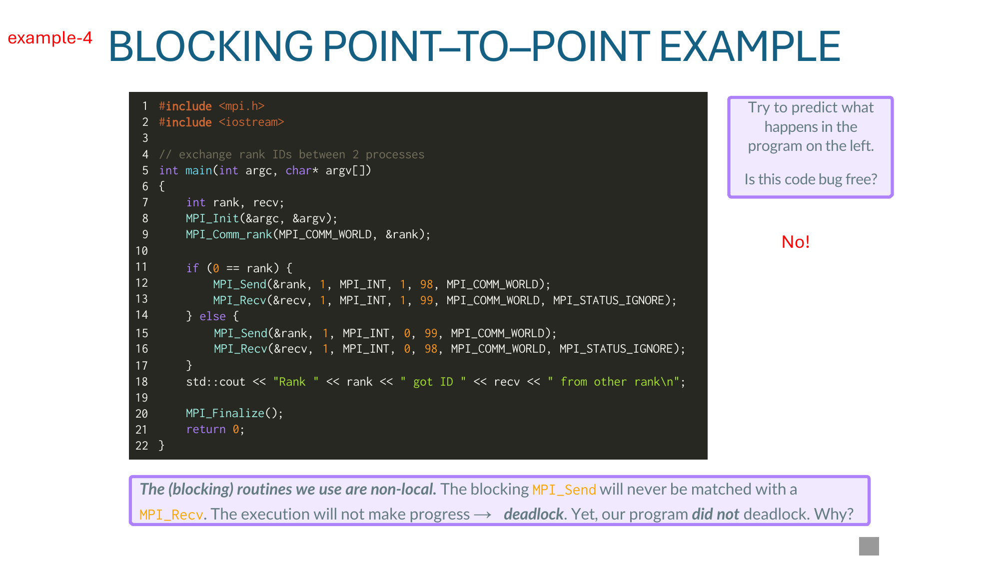
承接上一页：这段代码 bug-free 吗？答案：No!
"The (blocking) routines we use are non-local. The blocking MPI_Send will never be matched with a MPI_Recv. The execution will not make progress → deadlock. Yet, our program did not deadlock. Why?"
按 MPI 的规范，这段代码应该死锁：
MPI_Send，等 rank 1 来收。MPI_Send，等 rank 0 来收。MPI_Recv —— 经典死锁。但实际跑起来没死锁。这意味着"实际行为"和"规范要求"出现了偏差。下一页解释为什么：MPI 的实现允许做一种"buffering"小动作，在小消息时偷偷绕过这种死锁，但这是不可移植的。
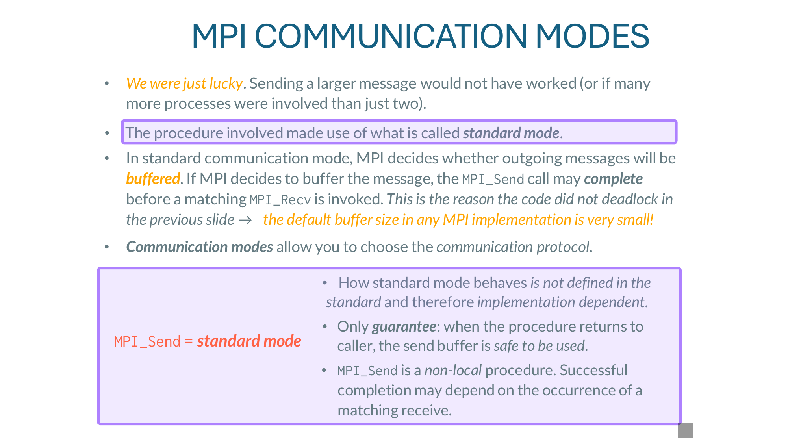
这一页解释为什么 example-4 能"碰巧跑通"，并引出 communication modes（通信模式）这个新概念。
"We were just lucky. Sending a larger message would not have worked (or if many more processes were involved than just two)." —— 消息大一点或进程多一点就死锁。
MPI_Send 用的是 standard mode（标准模式）。在这个模式下：
MPI_Send 立刻返回 —— 即使对方还没调 Recv。slide 紫色框：MPI_Send = standard mode，它的行为：
MPI_Send 返回时，发送 buffer 可以安全重用了。不保证消息已经发到对方。MPI_Send 是 non-local 过程，"成功完成"可能依赖于对方是否调用了 Recv。除了 standard，MPI 还有别的发送模式（buffered/synchronous/ready），每种对"何时返回"和"是否要等 Recv"有不同的保证。这些是选择 communication protocol（通信协议）的开关。这门课主要讲 standard mode，知道还有别的就行。
MPI_Sendrecv。
判定标准只有一个：当 MPI_Send 返回，意味着 send buffer 可以安全复用。但 MPI 库实现这个标准的路径有两套，按消息大小自动选择：
| 路径 | 触发 | 机制 | Send 返回时对方是否已拿到 |
|---|---|---|---|
| Eager | 消息小（~< 64 KB，实现相关） | Copy 到 MPI 内部 buffer，原 buffer 立即可复用 | 不一定（数据可能还在内部 buffer 漂着） |
| Rendezvous | 消息大 | 和接收方 handshake，零拷贝直传到对方 user buffer | 已拿到（协议要求对方 Recv 启动后才传） |
Rendezvous handshake 协议：
Sender Receiver
────── ────────
"我要发 N 字节" ─── RTS ────────→
等自己的 MPI_Recv 启动
←── CTS ───── "buffer 准备好了，发吧"
"传 N 字节" ────────────────→ 数据直接落到对方 user buffer
Send 返回注意：rendezvous 里 Send 等的是对方"准备好接收"的信号 (CTS)，不是"确认收到"的回复。Eager 完全没这个 handshake，copy 完就走人。
串回 example-4 的 deadlock 根源：双方都是"先 Send 后 Recv"模式。
这就是 slide 上说的 "we were just lucky"：标准没保证小消息一定 eager，"能跑"完全靠实现细节碰巧成立。
三种修法：
// 方法 1：调换顺序，让一方先 Recv
if (rank == 0) { MPI_Send(...); MPI_Recv(...); }
else { MPI_Recv(...); MPI_Send(...); } // 先 Recv
// 方法 2：用 MPI_Sendrecv（推荐，对称写法）
MPI_Sendrecv(&rank, 1, MPI_INT, partner, 98,
&recv, 1, MPI_INT, partner, 99,
MPI_COMM_WORLD, MPI_STATUS_IGNORE);
// 方法 3：用 non-blocking，立即返回
MPI_Request reqs[2];
MPI_Isend(&rank, 1, MPI_INT, partner, 98, MPI_COMM_WORLD, &reqs[0]);
MPI_Irecv(&recv, 1, MPI_INT, partner, 99, MPI_COMM_WORLD, &reqs[1]);
MPI_Waitall(2, reqs, MPI_STATUSES_IGNORE);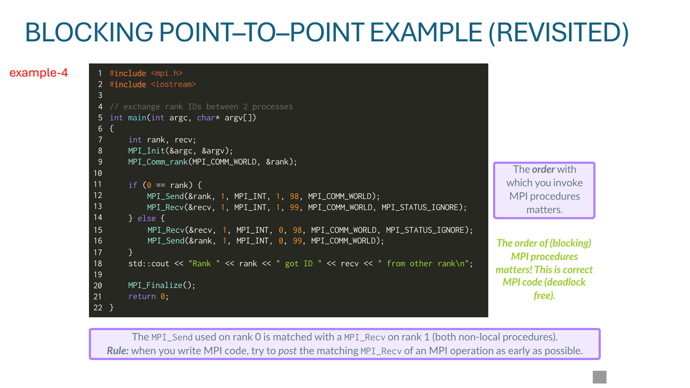
这一页给出 example-4 的修正版，演示如何写出真正 deadlock-free 的代码。
if (0 == rank) {
MPI_Send(&rank, 1, MPI_INT, 1, 98, MPI_COMM_WORLD);
MPI_Recv(&recv, 1, MPI_INT, 1, 99, MPI_COMM_WORLD, MPI_STATUS_IGNORE);
} else {
MPI_Recv(&recv, 1, MPI_INT, 0, 98, MPI_COMM_WORLD, MPI_STATUS_IGNORE);
MPI_Send(&rank, 1, MPI_INT, 0, 99, MPI_COMM_WORLD);
}关键：rank 1 先 Recv 再 Send。这样 rank 0 的 MPI_Send(...,dest=1,tag=98) 立刻能匹配上 rank 1 的 MPI_Recv(...,source=0,tag=98)，不再依赖运气好的 buffering。
Rule: when you write MPI code, try to post the matching MPI_Recv of an MPI operation as early as possible.
"尽早 post Recv" —— 因为 Recv 不是 non-local 的瓶颈源（Recv 本身只是声明"我准备好接收"），尽早调它有助于通信尽早匹配，避免 Send 端等待。
"The order of (blocking) MPI procedures matters!" —— blocking 调用的顺序是程序行为的一部分。同样几行代码换个顺序就从死锁变成正确，这是 MPI 编程和单线程编程一个重要区别。
MPI_Sendrecv，它把 send + recv 打包在一次调用里，MPI 实现保证不死锁；(3) 阻塞 MPI 调用的相对顺序就是它的语义，不能任意调换。
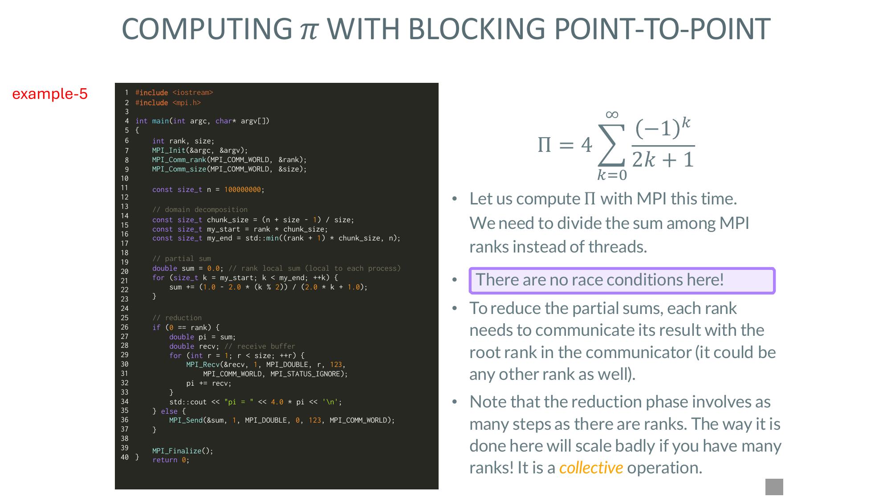
这一页用 MPI 做和上一讲 OpenMP 一样的事 —— 用 Leibniz 级数算 π：
π = 4 · Σk=0∞ (−1)k / (2k+1)
但这次不再是线程间分工，而是进程间分工 + 显式通信合并结果。
chunk_size = (n + size - 1) / size，my_start = rank * chunk_size，my_end = min(n, my_start + chunk_size)。(-1)^k / (2k+1) 到本地 sum。没有 race condition —— 各进程的内存独立。size-1 个非 root rank 的部分和都收到 rank 0。if (0 != rank) {
MPI_Send(&sum, 1, MPI_DOUBLE, 0, 0, MPI_COMM_WORLD);
} else {
for (int s = 1; s < size; ++s) {
MPI_Recv(&recv, 1, MPI_DOUBLE, s, 0, MPI_COMM_WORLD, MPI_STATUS_IGNORE);
sum += recv;
}
std::cout << 4 * sum;
}非 root rank 各自把自己的 partial sum 发给 rank 0；rank 0 在循环里依次收，累加进自己的 sum。
reduction 或 atomic；MPI 里每个进程有自己的 sum，根本没竞争。MPI_Reduce 用树形算法，只要 log₂(1000) ≈ 10 步，下一页讲。MPI_Reduce。
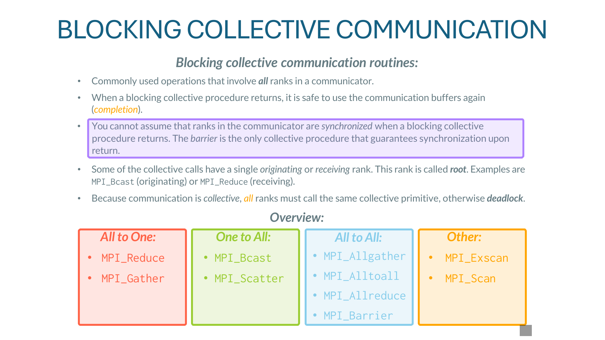
这一页正式进入 collective（集合通信）。集合通信涉及一个 communicator 里的所有 rank，是最常用的 MPI 操作类型。
MPI_Barrier。MPI_Bcast（root 是源头）、MPI_Reduce（root 是结果接收方）。其他 rank 在调用时也要传同样的 root 参数。MPI_Reduce（reduce 到 root）、MPI_Gather（收集到 root）。MPI_Bcast（root 广播）、MPI_Scatter（root 分发不同片段给各 rank）。MPI_Allgather（所有 rank 都收齐所有人的数据）、MPI_Alltoall（每对 rank 互换不同片段）、MPI_Allreduce（reduce 后结果发给所有人）、MPI_Barrier（同步点）。MPI_Scan（前缀和）、MPI_Exscan（不含自己的前缀和）。All... 前缀表示"结果让所有 rank 都看到一份"。MPI_Barrier 是唯一保证全员同步的。
这和 slide 32-34 讲过的 "blocking MPI_Send 返回 = buffer 可安全复用" 是完全同一套语义，只是搬到 collective 上：当 MPI_Bcast/MPI_Reduce/MPI_Allreduce/... 在本进程返回时，传给它的 sendbuf/recvbuf 解禁 —— MPI 库不会再读 sendbuf 也不会再写 recvbuf，你可以放心改/复用。
不同 collective 在返回时的 buffer 状态：
| Collective | 本进程 sendbuf | 本进程 recvbuf |
|---|---|---|
MPI_Bcast（root） | 数据已交给 MPI，可改 | — |
MPI_Bcast（非 root） | — | 已收到数据 |
MPI_Reduce（非 root） | 已交出，可改 | — |
MPI_Reduce（root） | 已交出，可改 | 已含归约结果 |
MPI_Allreduce | 已交出，可改 | 已含归约结果 |
关键：这是关于"本进程 buffer 所有权"的局部声明，不是关于 collective 全局完成的声明。不同进程的返回时机可能差很多（tree 算法下 root 和叶子节点返回时间不同），每个进程只为自己的 buffer 负责。这正是上面紫色框那条 "不要假设集合返回 = 所有 rank 都到同一点" 的具体体现。
Non-blocking 版本（MPI_Ibcast/MPI_Ireduce/...）把 buffer 解禁推后到 MPI_Wait：
MPI_Request req;
MPI_Ibcast(&data, 1, MPI_INT, 0, MPI_COMM_WORLD, &req);
// 立即返回，但 data buffer 还不安全 —— MPI 后台可能在用
// data = 99; ❌ UB
MPI_Wait(&req, MPI_STATUS_IGNORE);
data = 99; // ✓ 现在才解禁对应 slide 28 四阶段：blocking collective 一次调用打包 init/start/complete/free 四阶段；non-blocking 拆成 Ibcast（init+start）+ Wait（complete+free）。"Buffer 解禁"对应 complete 阶段。
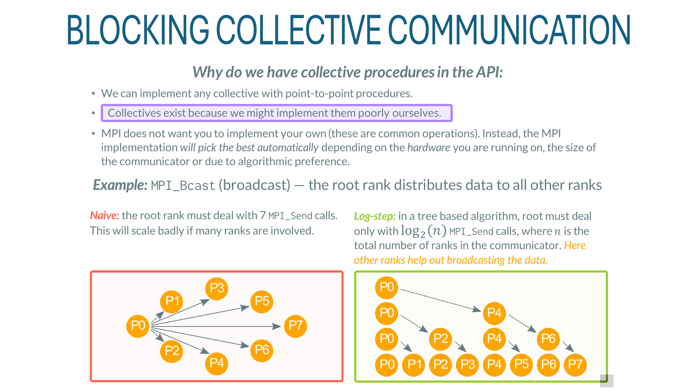
这一页（与 slide 39 同主题，39 多了一个数字对比的 note）讲"既然 collective 都能用 send/recv 拼出来，为什么还要专门的 collective API"。答案：实现得好太难，让 MPI 替你做。
"Collectives exist because we might implement them poorly ourselves." —— collective 存在的理由就是"自己写很容易写得很烂"。
更具体地："MPI does not want you to invent your own. The MPI implementation will pick the best automatically depending on the hardware, the size of the communicator, or due to algorithmic preference." —— MPI 实现会根据网络拓扑、节点数、消息大小等自动选最优算法。你手写很难考虑到这些维度。
Naive 实现（红色图） —— root rank 把数据顺序发给每个其他 rank：
Log-step 实现（绿色图，树形） —— root 先发给一个 rank，然后两人各发给一个新人，四人各发给一个新人...指数扩散：
规模越大差距越夸张，这就是 collective 在 HPC 里不可替代的根本原因。
for s=1..size: MPI_Recv 在 1000 进程时是灾难，正确做法是 MPI_Reduce（slide 40）。
这个直觉部分对、部分反了。实战里的频率排序大致是：
Allreduce ≫ Reduce ≈ Bcast ≫ Send/Recv ≫ Gather/Scatter ≫ Alltoall ≫ Scan/Exscan意外的是几个 collective 比 send/recv 更常用：
类比：collective 像 NumPy 的 sum() / cumsum()；send/recv 像手写 for 循环。前者看起来"专门"，但实际覆盖了大部分日常需求。
"同时"在 logical 层写得出，但 physical 层不可能真同时 —— P0 是单点资源，发送能力固定。
尝试 1：用 MPI_Isend 让 N-1 条 send "同时"发出
// P0 看似同时发给所有人
MPI_Request reqs[size-1];
for (int i = 1; i < size; i++) {
MPI_Isend(&data, 1, MPI_INT, i, 0, MPI_COMM_WORLD, &reqs[i-1]);
}
MPI_Waitall(size-1, reqs, MPI_STATUSES_IGNORE);Logical 上 N-1 个 request 同时在飞，但物理传输还是受 P0 自己硬件约束：
结论：P0 一个进程发 N-1 份数据的总耗时仍是 O(N)，Isend 只是把"等待"从用户线程挪到了后台。
Tree 算法的本质：让接收方变成发送方，分摊带宽
Step 1: P0 → P1 (1 个发送方)
Step 2: P0 → P2, P1 → P3 (2 个发送方)
Step 3: P0 → P4, P1 → P5, P2 → P6, P3 → P7 (4 个发送方)每一步发送方数量翻倍，每个发送方只发一份数据。Step 3 那一刻有 4 张网卡同时工作，是 P0 单点广播永远做不到的。Tree 算法没让任何单条链路变快，它做的是让多条链路同时被使用，把固定的"总传输工作量"分布到多个 sender 上并行完成。
那能不能真"P0 一次广播"？
所以默认实现选 tree —— 只依赖最基本的 point-to-point 能力，在任何 MPI 实现 + 任何网络上都能跑，且能拿到 O(log N) 扩展性。
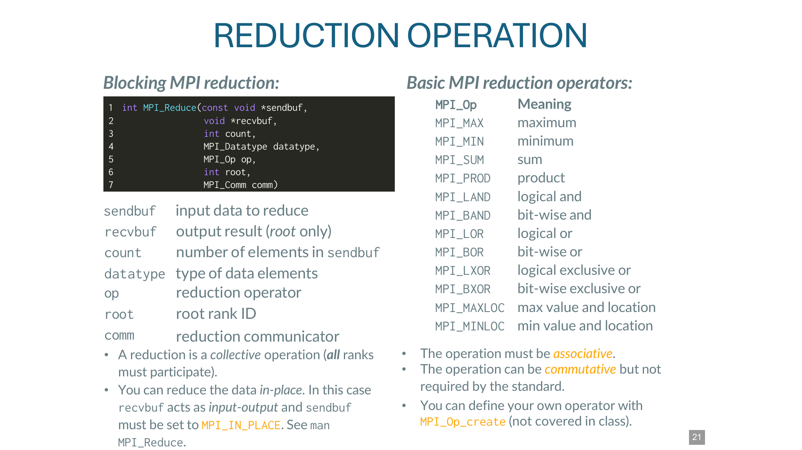
这一页给出 MPI_Reduce 的完整签名 —— 上一讲（slide 36）我们手写的"所有 rank 把 partial sum 发给 root"操作，正确的做法 就是这一个函数。
int MPI_Reduce(
const void *sendbuf, // 输入：自己要参与归约的数据
void *recvbuf, // 输出：归约结果（仅 root 上有效）
int count, // 元素个数
MPI_Datatype datatype, // 元素类型
MPI_Op op, // 归约运算符（如 MPI_SUM）
int root, // 收结果的 rank
MPI_Comm comm // 通信器
);所有 rank 都调这个函数（collective），传一样的 op、root、comm，每个 rank 把自己的 sendbuf 传进去。MPI 内部把所有 rank 的 sendbuf 按 op 合并，结果写到 root 的 recvbuf。非 root rank 的 recvbuf 不被使用，可传 nullptr（具体看实现，但语义上你不能依赖它）。
| MPI_Op | 语义 |
|---|---|
MPI_MAX / MPI_MIN | 最大值 / 最小值 |
MPI_SUM / MPI_PROD | 求和 / 求积 |
MPI_LAND / MPI_LOR / MPI_LXOR | 逻辑 and / or / xor |
MPI_BAND / MPI_BOR / MPI_BXOR | 位运算 and / or / xor |
MPI_MAXLOC / MPI_MINLOC | 最值及其位置（同时返回 value 和 rank） |
如果你不想多分配 sendbuf，可以让 recvbuf 同时充当输入：把 sendbuf 设为 MPI_IN_PLACE，MPI 会从 recvbuf 读输入数据再写回结果。常见于"我已经把数据放好了，就在这里 reduce 然后覆盖结果"的场景。
用 MPI_Op_create 可以注册自己的归约函数（比如把"复数乘法"做成 op）。本课程不涉及。
if(rank!=0) Send; else for: Recv 整个换成一行 MPI_Reduce(&sum, &total, 1, MPI_DOUBLE, MPI_SUM, 0, MPI_COMM_WORLD);。少十几行代码、自动 O(log n) 树形合并、跨硬件最优。这就是为什么"看到 reduce 模式就用 MPI_Reduce"。
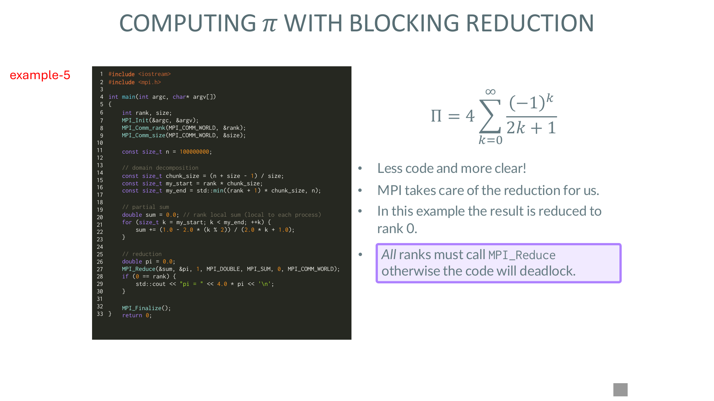
这一页就是把 slide 36 那个手写归约的 π 程序，用 MPI_Reduce 替换掉，演示集合通信带来的代码与性能双赢。
double pi = 0.0;
MPI_Reduce(&sum, &pi, 1, MPI_DOUBLE, MPI_SUM, 0, MPI_COMM_WORLD);
if (0 == rank) {
std::cout << "pi = " << 4 * pi << "\n";
}之前 slide 36 那一整段 if(rank!=0) Send; else for: Recv 共 6–7 行，压缩成一行 MPI_Reduce。所有 rank 的 partial sum 都按 MPI_SUM 合并到 rank 0 的 pi 变量。
"All ranks must call MPI_Reduce otherwise the code will deadlock."
这是 collective 的铁律。slide 36 里非 root rank 调 Send、root 调 Recv，语义上不对称；换成 MPI_Reduce 后所有 rank 都调同一个函数，少一个就死锁。常见 bug：在某个 if 分支里漏调了集合操作。
MPI_Reduce 调用展开讲一下，root 体现在哪里？MPI_Reduce 完整签名是 7 个参数，按位置一一对应：
MPI_Reduce(&sum, &pi, 1, MPI_DOUBLE, MPI_SUM, 0, MPI_COMM_WORLD);
// ① ② ③ ④ ⑤ ⑥ ⑦| # | 形参 | 实参 | 含义 |
|---|---|---|---|
| ① | sendbuf | &sum | 每个 rank 自己已经算好的本地分量地址 |
| ② | recvbuf | &pi | 结果写到哪里。仅 root 这个变量真的会被赋值，非 root 的 pi 不变 |
| ③ | count | 1 | 元素个数（这里只 1 个） |
| ④ | datatype | MPI_DOUBLE | 每个元素的类型 |
| ⑤ | op | MPI_SUM | 归约运算符（加法） |
| ⑥ | root | 0 | 结果归集到 rank 0 |
| ⑦ | comm | MPI_COMM_WORLD | 在哪个 communicator 里做 |
Root 体现在两层：
0 字面上指定 root 是 rank 0。改成 2 就是结果送 rank 2。recvbuf 真正被赋值。调用 MPI_Reduce 后 | |
|---|---|
| Rank 0（root=0） | 贡献 sum + 接收最终结果到 pi |
| Rank 1, 2, ...（非 root） | 只贡献 sum，自己的 pi 不被赋值 |
Before / After 数据流（4 个 rank 为例）：
调用前：
Rank 0: sum = S₀, pi = ?
Rank 1: sum = S₁, pi = ?
Rank 2: sum = S₂, pi = ?
Rank 3: sum = S₃, pi = ?
调用后：
Rank 0: sum = S₀, pi = S₀+S₁+S₂+S₃ ← 结果在这里
Rank 1: sum = S₁, pi = ? ← 不动
Rank 2: sum = S₂, pi = ? ← 不动
Rank 3: sum = S₃, pi = ? ← 不动所以代码后面跟 if (rank == 0) printf(...) —— 只有 rank 0 的 pi 有效。
Root 参数的两条隐性规则：
recvbuf 即使没用也要传合法指针 —— C 函数签名要求合法地址，习惯传同一个 &pi。MPI 标准上它的内容不会被读也不会被写。对比 MPI_Allreduce：如果想让所有 rank 都拿到结果，换成 MPI_Allreduce(&sum, &pi, 1, MPI_DOUBLE, MPI_SUM, MPI_COMM_WORLD) —— 签名少了 root 参数，因为语义就是"结果发给所有人"，不需要指定接收方。这反过来印证了 root 的角色：它就是"结果归集到哪里"的开关。
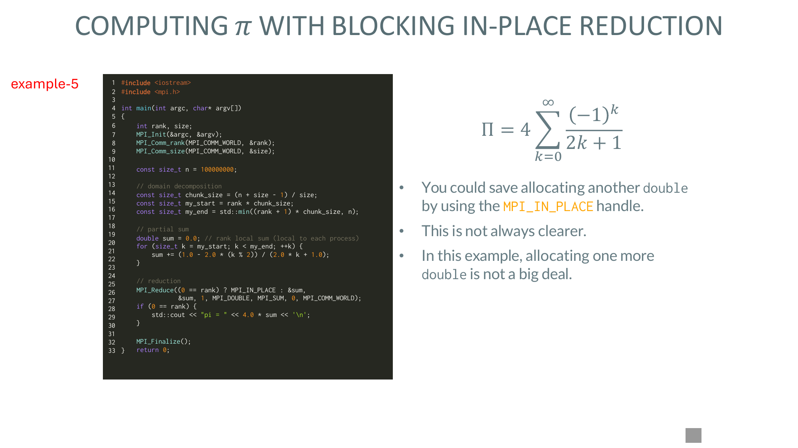
这一页是 slide 41 的小变种 —— 用 MPI_IN_PLACE 让 root 节省一个 buffer。
if (0 == rank) {
MPI_Reduce(MPI_IN_PLACE, &sum, 1, MPI_DOUBLE, MPI_SUM, 0, MPI_COMM_WORLD);
} else {
MPI_Reduce(&sum, nullptr, 1, MPI_DOUBLE, MPI_SUM, 0, MPI_COMM_WORLD);
}
if (0 == rank) {
std::cout << "pi = " << 4 * sum << "\n";
}sendbuf 设为 MPI_IN_PLACE，recvbuf 写 &sum。意思是"输入也用 recvbuf，结果原地覆盖回去"。&sum 作 sendbuf，recvbuf 反正不用，传 nullptr 也行。MPI_IN_PLACE —— 主要好处是不用为 root 单独分配一个新变量。如果是大数组（不是单个 double），这种省略就有意义了。MPI_IN_PLACE 真正的应用场景是大型数组，比如几百 MB 的矩阵。recvbuf 为啥可以"随便"传？nullptr 这种写法对吗？非 root 在 reduce 里根本不写 recvbuf。直观上你可能以为"非 root 把数据送出去时也要先放进某个 recv-side buffer 再被收走"——其实不是。树形归约的中间收发都发生在 MPI 内部缓冲里：每个非 root 把 sendbuf 的数据递给上一层，最终汇到 root 才写进用户层的 recvbuf。所以非 root 那个 recvbuf 仅仅是 C 函数签名上的占位实参。
但 slide 那里写 nullptr 其实不严谨：MPI 标准没保证实现不会去检查/解引用这个指针。更稳妥的写法是复用同一个变量（如 &sum），既给了合法地址也不会被改：
MPI_Reduce(&sum, &sum, 1, MPI_DOUBLE, MPI_SUM, 0, MPI_COMM_WORLD); // 非 root 也安全MPI_IN_PLACE 到底省了什么？是省 MPI 内部那个 buffer 吗？不是。要分清三层 buffer：
| 层 | 谁拥有 | IN_PLACE 影响？ |
|---|---|---|
用户 sendbuf | 用户代码 | — |
用户 recvbuf | 用户代码 | 就是省这个 |
| MPI 内部缓冲（eager copy / rendezvous） | MPI 库 | 无关 |
IN_PLACE 只是让 root 的 sendbuf 和 recvbuf 共用同一块用户内存，省掉一个用户层变量声明。和 eager / rendezvous 那套内部缓冲机制完全正交。
对单个 double 毫无意义。真正有用的场景是 1GB 的梯度数组这种——少分配 1GB 是实打实的。代价：root 的原始输入被结果覆盖。
MPI_Reduce 会自动识别"非 root 的结果该收到 root 的哪个变量"吗？不会。结果落到哪里完全由 root 自己传的 recvbuf 决定，和非 root 传什么没关系。
底层原因：进程间指针不互通——每个进程的指针是本进程的虚拟地址，root 进程拿不到非 root 进程的 &result，反过来也一样。MPI 库的协调机制是基于 rank 角色（"谁是 root"由第 6 个参数指定），不是基于指针传递。
所以同样一行 MPI_Reduce(MPI_IN_PLACE, &gradient, ..., 0, ...)：rank 0 的 gradient 被覆盖成最终结果，rank 1/2/3 的 gradient 一动不动。这个规则推广到所有 collective（Bcast、Scatter、Gather…）。
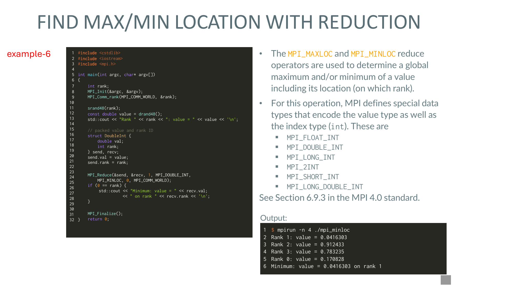
这一页讲两个特殊归约运算符：MPI_MAXLOC 和 MPI_MINLOC。它们的特点是同时返回"最值"和"最值在哪个 rank 上"。常用于"找最差/最好的进程"这类调试和负载均衡场景。
普通 MPI_MAX 只返回最大值。MPI_MAXLOC 要同时返回值和它的索引（rank），所以输入必须是"value + 索引"成对的结构。MPI 为此预定义了一组特殊 datatype：
MPI_FLOAT_INT —— { float, int } 对MPI_DOUBLE_INT —— { double, int } 对MPI_LONG_INT —— { long, int } 对MPI_2INT —— { int, int } 对MPI_SHORT_INT —— { short, int } 对MPI_LONG_DOUBLE_INT —— { long double, int } 对"int" 那一项就是位置（rank）。详见 MPI 4.0 标准 6.9.3 节。
struct DoubleInt {
double val;
int rank;
} send_val, recv_val;
send_val.val = drand48();
send_val.rank = rank;
MPI_Reduce(&send_val, &recv_val, 1, MPI_DOUBLE_INT,
MPI_MINLOC, 0, MPI_COMM_WORLD);
if (0 == rank) {
std::cout << "Minimum: value = " << recv_val.val
<< " on rank " << recv_val.rank << "\n";
}每个 rank 把 {val, rank} 配对作为一个元素发出。MPI_MINLOC 在所有 pair 里挑出 val 最小的那一对，连同它的 rank 一起送回 root。
$ mpirun -n 4 ./mpi_minloc
Rank 1: value = 0.0416303
Rank 2: value = 0.812433
Rank 3: value = 0.783235
Rank 0: value = 0.708626
Minimum: value = 0.0416303 on rank 14 个 rank 各自生成一个随机数，MPI_MINLOC 找出最小的（rank 1 的 0.0416303）并返回。
MPI_MIN如果只用 MPI_MIN 和 MPI_DOUBLE，你只能得到 0.0416303，不知道它属于哪个 rank。要再写一轮通信才能问出来。MPI_MINLOC 一次搞定，是它存在的全部理由。
MPI_MAXLOC 找出最大执行时间和它的 rank；(2) 负载均衡 —— 哪个 rank 的工作量最重？用 MAXLOC 反查。比"先 MAX 再二轮 Send 问 rank"高效得多。
MPI_Reduce 的参数顺序是固定的吗？MPI 各 API 是不是统一的一套顺序？这一行 MPI_Reduce(&send_val, &recv_val, 1, MPI_DOUBLE_INT, MPI_MINLOC, 0, MPI_COMM_WORLD) 和 slide 41 那行完全是同一个签名，只是 datatype 换成 MPI_DOUBLE_INT、op 换成 MPI_MINLOC。但 MPI 整套 API 不是逐参数严格一致——只有"分组一致"。
| 函数 | 签名 |
|---|---|
MPI_Send | (buf, count, datatype, dest, tag, comm) |
MPI_Recv | (buf, count, datatype, source, tag, comm, status) |
MPI_Bcast | (buf, count, datatype, root, comm) |
MPI_Reduce | (sendbuf, recvbuf, count, datatype, op, root, comm) |
MPI_Allreduce | (sendbuf, recvbuf, count, datatype, op, comm) |
MPI_Scatter | (sendbuf, sendcount, sendtype, recvbuf, recvcount, recvtype, root, comm) |
真正稳定的只有两条骨架：
(buf, count, datatype) 紧挨着。Reduce 因为输入输出元素数和类型必须一致，可以共用一份 count/datatype；Scatter 输入输出类型可不同，所以两套三件套都完整列出。comm 永远最后（MPI_Recv 例外，因为有 status 输出参数兜底）。中间那段"业务参数"完全看函数语义：点对点要 dest/source + tag；广播要 root；归约要 op + root；Allreduce 不要 root（人人都收）。不能死记一套通用顺序，只能记三件套绑定 + comm 收尾这两条骨架，剩下查 man MPI_Xxx。